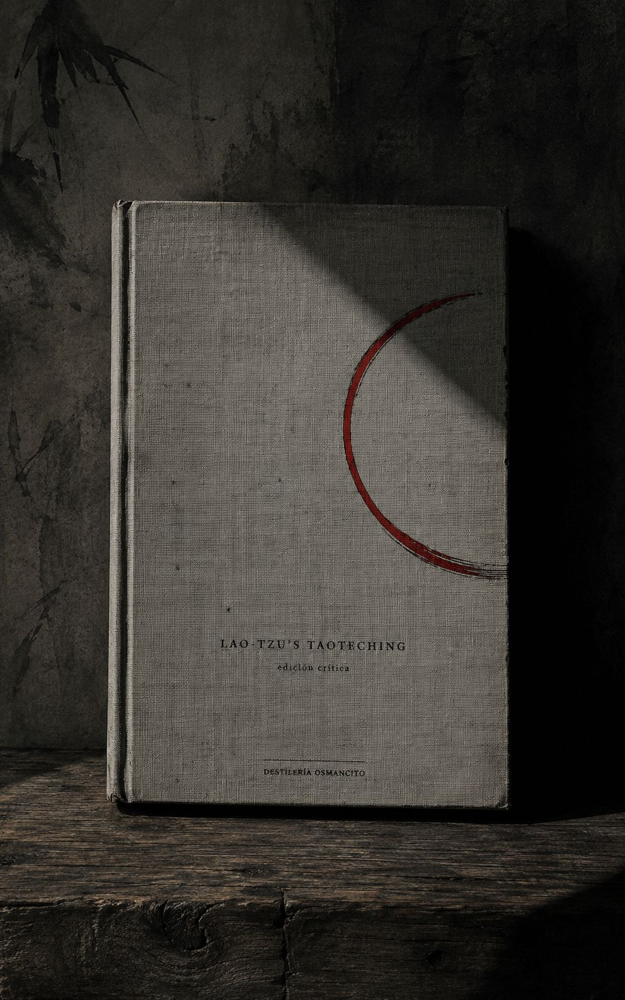
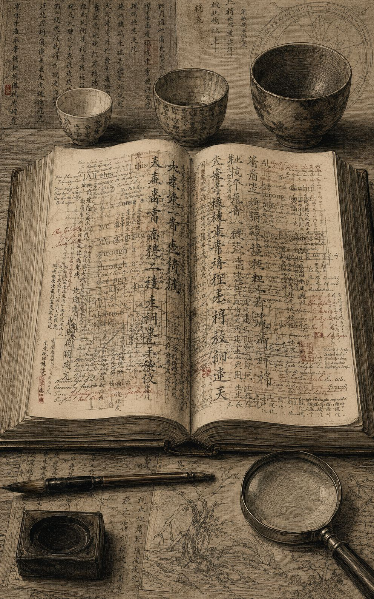
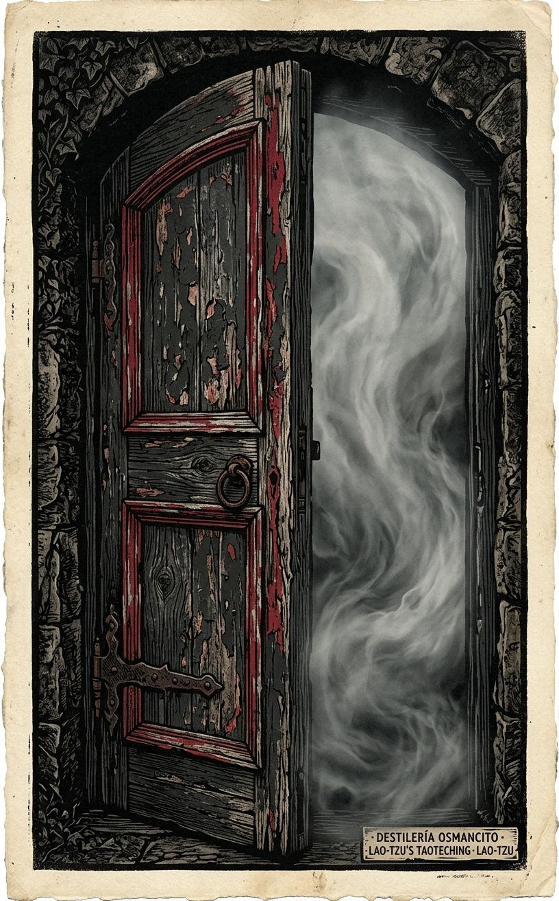
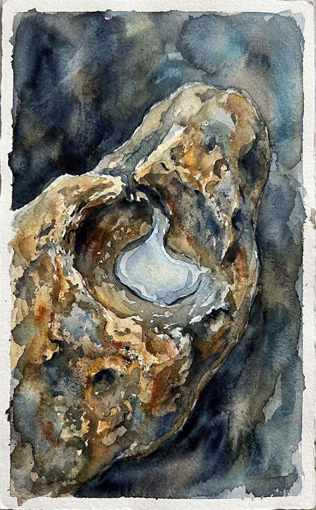

Un volumen delgado que pesa como si tuviera ochenta y un siglos adentro, no ochenta y un capítulos.
Esto no es un libro que se lee de corrido: es un pozo con ochenta y un cubos, cada uno bajado por Lao-tzu y subido después por generaciones de comentaristas que discuten entre sí sobre lo que el agua significaba. El corpus no es el poema —es el poema más dos mil años de gente tratando de no traicionarlo al explicarlo. Nombrar esto como “Tao Te Ching” es preciso; resumir lo que dice ya es una traición pequeña, la misma que el primer verso advierte.
Título — Lao-tzu’s Taoteching Autor — Lao-tzu, con traducción, notas y comentario acumulado de Red Pine (Bill Porter) Año — Compuesto hacia finales del siglo VI a.C.; esta traducción publicada en 1996, edición revisada en 2009/2012 Género — Filosofía sapiencial en verso, con aparato de comentario crítico multivocal Extensión estimada — aproximadamente 49.800 palabras, unas 199 páginas a 250 palabras por página, 81 capítulos más prefacio e introducción Idioma original — Chino clásico Palabra más frecuente con contenido — Tao (325 apariciones, excluyendo el verbo atributivo “says” que domina por la estructura misma del comentario). Confirma lo que el corpus declara ser: un libro que no deja de nombrar aquello que en su primer verso dice que no puede nombrarse.
El Taoteching es un tratado breve —ochenta y un versos— atribuido a un archivista de la corte Chou llamado Lao-tzu, que enseña el gobierno del mundo y de uno mismo por la vía de la no-acción, la humildad y la semejanza con el agua. Esta edición de Red Pine no entrega el poema solo: cada verso viene seguido de un mosaico de comentarios de decenas de eruditos y monjes chinos —desde Wang Pi en el siglo III hasta lecturas del siglo XX— más las propias notas filológicas del traductor sobre variantes textuales entre el texto estándar, los manuscritos de Mawangtui (168 a.C.) y los fragmentos de Kuotien (300 a.C.), estos últimos hallados en una tumba en 1993. El libro es entonces dos cosas a la vez: el poema y el registro de dos milenios de gente peleándose amablemente sobre qué quiso decir.
Lao-tzu — figura semilegendaria, archivista de la corte, autor atribuido del texto. Red Pine (Bill Porter) — traductor, compilador del aparato de comentarios, autor de las notas filológicas y del prefacio/introducción. Wang Pi — comentarista del siglo III, una de las voces más citadas. Ho-shang Kung — comentarista antiguo, lectura de tono más religioso/alquímico. Su Ch’e, Te-Ch’ing, Wu Ch’eng, y decenas más — comentaristas chinos de distintos siglos cuyas voces se intercalan verso a verso. Yin Hsi — el guardián del paso fronterizo a quien, según la leyenda referida en el propio texto, Lao-tzu entregó el manuscrito antes de desaparecer.
No hay trama en sentido narrativo. El territorio es doctrinal y se despliega en dos niveles simultáneos que el lector recorre a la vez:
Nivel 1 — el poema. Ochenta y un capítulos breves, sin numeración temática explícita pero con una progresión reconocible: los primeros versos (1–37, tradicionalmente “Libro del Tao”) sientan la naturaleza indecible, vacía y generativa del Tao; los versos posteriores (38–81, “Libro del Te”) giran hacia la virtud, el gobierno, la guerra y la conducta del sabio. Temas que retornan sin resolverse: la paradoja del nombre (lo que se nombra deja de ser lo nombrado), el elogio de lo vacío y lo blando sobre lo lleno y lo duro, el gobernante que gobierna sin intervenir, el sabio que no compite, la crítica a la moral confuciana (kindness, justice) como síntoma de que el Tao ya se perdió, y el ideal del “estado pequeño” (verso 80) como utopía anti-expansiva.
Nivel 2 — el aparato. Cada verso trae su propia micro-historia de recepción: qué dijo Wang Pi, qué corrigió Su Ch’e, qué variante aparece en Mawangtui frente al texto estándar, qué verso directamente no existe en los fragmentos de Kuotien (varios no lo tienen, lo cual el traductor señala cada vez). El prefacio narra el hallazgo de 1993 de las tablillas de bambú en una tumba en Kuotien —el hallazgo textual que motivó la revisión de esta edición. La introducción de 1996 desarrolla la tesis de que “Tao” está lingüísticamente emparentado con “luna” en varias lenguas (tibetano, miao, egipcio, sánscrito), y que las imágenes del texto (lo que crece desde la oscuridad, lo que mengua y crece) son en el fondo imágenes lunares.
Primer contacto: el libro no se deja leer rápido aunque cada verso podría leerse en diez segundos. La resistencia no está en la dificultad del poema —que es limpio, casi infantil en su sintaxis— sino en el peso del aparato que lo rodea: cada línea abre una grieta de siglos de gente discutiendo su sentido, y esa grieta invita a quedarse. Es un libro que enseña paciencia por el simple hecho de exigirla para ser recorrido.
El nombre contra lo nombrado — el texto entero se construye sobre la advertencia de que nombrar traiciona, y sin embargo no deja de nombrar: Tao, Virtud, el sabio, el vacío. ¿Puede un libro de 5.000 caracteres obedecer su propio primer verso?
Autoridad sin autor fijo — ¿de quién es este texto cuando Wang Pi, Ho-shang Kung, Su Ch’e y Red Pine llevan dos mil años reescribiéndolo por acumulación de glosa? El comentario no aclara al poema: se vuelve parte de él.
Blandura como fuerza política — el elogio recurrente de lo débil, lo bajo, lo vacío no es solo actitud personal sino programa de gobierno (versos 30, 31, 61, 66, 76, 78). ¿Es el Taoteching un manual espiritual disfrazado de tratado político, o un tratado político que encontró que la única forma de decir “no invadas” era hablar de agua?
El camino que se hace camino no es el Camino Inmortal; el nombre que se hace nombre no es el Nombre Inmortal. Sin nombre es la doncella del Cielo y la Tierra; con nombre, la madre de las diez mil cosas. Dos nombres distintos para lo mismo: a eso lo llamamos oscuro, la oscuridad más allá de lo oscuro, la puerta a todo comienzo.
Todo el mundo conoce la belleza, pero si eso se vuelve bello, esto se vuelve feo. Tener y no tener se crean mutuamente; difícil y fácil se producen mutuamente; largo y corto se dan forma; alto y bajo se completan. Por eso el sabio realiza obras sin esfuerzo y enseña lecciones sin palabras.
Los mejores son como el agua, que ayuda a todos sin competir, eligiendo lo que otros evitan; así se acercan al Tao.
Treinta rayos convergen en un cubo, pero es el vacío lo que hace que la rueda funcione. Las vasijas se moldean con arcilla, pero es el hueco lo que hace que la vasija funcione. Se tallan puertas y ventanas para una casa, pero es el vacío lo que hace que la casa funcione. Así, lo que existe es útil, pero es de lo que no existe de donde viene el uso.
Los cinco colores nos ciegan los ojos; los cinco tonos nos ensordecen los oídos; los cinco sabores nos entumecen la boca. Por eso el gobierno de los sabios favorece el estómago sobre los ojos.
Los grandes maestros de la antigüedad se enfocaban en lo indiscernible y penetraban la oscuridad. Nunca los conocerías. Eran cuidadosos como quien cruza un río en invierno, cautelosos como quien teme a sus vecinos, reservados como un huésped, simples como madera sin tallar, abiertos como un valle, turbios como un charco. Pero quienes pueden ser como un charco se aclaran al quedarse quietos, y quienes pueden descansar cobran vida al ser movidos.
El Tao permanece sin nombre, simple, y aunque pequeño nadie puede mandarlo. Instalar en pie la Gran Imagen y el mundo vendrá y quedará a salvo. El Tao habla palabras llanas que no tienen sentido: lo miramos y no lo vemos, lo escuchamos y no lo oímos, y sin embargo lo usamos sin fin.
Imagina algo nebuloso, aquí antes del Cielo y la Tierra, sutil y elusivo, sin habitar en ningún sitio y sin nada que lo constriña. Podría ser la madre de todos nosotros. Sin conocer su nombre, lo llamo el Tao; forzado a describirlo, lo describo como grande. Grande significa que fluye sin cesar; fluir sin cesar significa alcanzar lejos; alcanzar lejos significa regresar.
Reconoce lo masculino pero conserva lo femenino, y sé la doncella del mundo. Siendo la doncella del mundo, no pierdas tu Virtud Inmortal; no perdiéndola, vuelve a ser un recién nacido. Reconoce lo blanco pero conserva lo negro, y sé la guía del mundo.
El Tao da nacimiento al uno; el uno da nacimiento al dos; el dos da nacimiento al tres; el tres da nacimiento a las diez mil cosas. Lo que el mundo odia —ser huérfano, viudo, indigente— los reyes lo usan como título. Así, algunos ganan perdiendo, otros pierden ganando.
Quienes conocen no hablan; quienes hablan no conocen. Sellar la abertura, cerrar la puerta, embotar el filo, deshacer el nudo, suavizar la luz, unirse al polvo: a esto se le llama la Unión Oscura. No puede abrazarse ni abandonarse, no puede ayudarse ni dañarse, no puede exaltarse ni rebajarse; por eso el mundo la exalta.
La razón por la que el mar puede gobernar cien ríos es que ha dominado el estar más abajo. Por eso puede gobernar cien ríos. Así, si los sabios quisieran estar por encima del pueblo, deberían hablar como si estuvieran por debajo; si quisieran ir al frente, deberían actuar como si fueran detrás.
Actuar sin actuar, trabajar sin trabajar, entender sin entender. Grande o pequeño, mucho o poco, pagar cada agravio con virtud. Planear lo difícil mientras es fácil; ocuparse de lo grande mientras es pequeño. La tarea más difícil del mundo comienza fácil; la meta más grande del mundo comienza pequeña.
Cuando la gente deja de temer a la autoridad, aparece una autoridad mayor. No restrinjas dónde habita la gente; no reprimas cómo vive. Si no los reprimes, no protestarán.
Imagina un estado pequeño con poca población. Que haya herramientas que ahorren trabajo y no se usen. Que la gente considere la muerte y no se aleje mucho. Que haya botes y carretas pero ninguna razón para montarlos, armadura y armas pero ninguna razón para emplearlas. Que la gente vuelva a usar nudos para contar y esté satisfecha con su comida, complacida con su ropa, contenta con su hogar, feliz con sus costumbres. Que haya otro estado tan cerca que se oigan sus perros y gallinas, y aun así la gente viva y muera sin haberlo visitado nunca.
Las palabras verdaderas no son bellas; las palabras bellas no son verdaderas. Los buenos no son elocuentes; los elocuentes no son buenos. Los sabios no son eruditos; los eruditos no son sabios. Los sabios no acumulan nada, pero cuanto más hacen por otros, mayor es su existencia; cuanto más dan a otros, mayor es su abundancia. El camino del Cielo es ayudar sin dañar; el camino del sabio es actuar sin luchar.
Sobre esta última línea, TE-CH’ING observa algo que el propio libro parecía prohibirse desde el primer verso: que Lao-tzu dijo que el Tao no puede ponerse en palabras, y sin embargo escribió cinco mil caracteres. Espera hasta el último verso para explicarlo —que aunque el Tao mismo no incluye palabras, por medio de palabras puede revelarse, pero solo por palabras que vienen del corazón. Y detrás de esa observación, la tesis con la que Red Pine abre el libro entero: que Tao comparte herencia lingüística con palabras que significan “luna” en culturas distantes —los tibetanos la llaman da-ua, los miao tao-tie, los antiguos egipcios thoth—, y que las imágenes del texto (lo que crece desde la oscuridad, lo que mengua y crece, lo que no puede llenarse) son, en el fondo, imágenes lunares que nadie antes había leído así.
Este corpus no contiene refranes incrustados en una trama —es, de principio a fin, refranero puro: cada uno de los 81 capítulos es en sí mismo una o varias sentencias de validez general, puestas en boca de una sola voz que nunca narra un hecho particular, solo enuncia leyes. La tensión no está en quién cita el refrán frente a quién actúa distinto —no hay personajes que las ignoren— sino en la acumulación misma: un libro que es, literalmente, nada más que máximas, hasta el punto de que extraer “los refranes” del texto es casi copiar el texto entero.
El corpus completo (81 capítulos, ~5.000 caracteres en chino, ~49.800 palabras en esta edición con comentario) está compuesto de sentencias de validez general. No hay personajes: la única voz sentenciosa es la del propio Lao-tzu como enunciador del texto; los comentaristas (Wang Pi, Su Ch’e, Ho-shang Kung, y decenas más) glosan esas sentencias pero rara vez añaden máximas propias de igual estatus —citan clásicos anteriores (el Yiching, Confucio, Chuang-tzu) cuando lo hacen. No hay concentración por sección: las sentencias están distribuidas parejo en los 81 capítulos, con picos de mayor densidad aforística discreta (líneas que funcionan sueltas, fuera de su verso) en los capítulos 2, 8, 22, 24, 33, 36, 41, 63, 76, 78, y 81. Dado que el criterio de “unidad discreta y citable por separado” exige extraer solo las líneas que se sostienen solas, sin el resto del verso, el listado siguiente selecciona 15 sentencias de ese tipo — no los 81 capítulos completos, que ya están registrados en Néctar.
1. “Todo el mundo conoce la belleza, pero si eso se vuelve bello, esto se vuelve feo” — voz de Lao-tzu, verso 2. A propósito de cómo los opuestos se generan mutuamente.
2. “Los mejores son como el agua” — voz de Lao-tzu, verso 8. A propósito de la virtud de no competir.
3. “Es el vacío lo que hace que la rueda funcione” — voz de Lao-tzu, verso 11. A propósito de la utilidad de lo que no existe.
4. “Quienes conocen no hablan; quienes hablan no conocen” — voz de Lao-tzu, verso 56. A propósito de la Unión Oscura, lo que no puede exaltarse ni rebajarse.
5. “La tarea más difícil del mundo comienza fácil; la meta más grande del mundo comienza pequeña” — voz de Lao-tzu, verso 63. A propósito de actuar sin actuar.
6. “Un árbol gigante crece del brote más diminuto; una gran torre se alza de un cesto de tierra; un viaje de mil millas comienza en tus pies” — voz de Lao-tzu, verso 64. A propósito de actuar antes de que algo exista.
7. “La razón por la que el mar puede gobernar cien ríos es que ha dominado el estar más abajo” — voz de Lao-tzu, verso 66. A propósito del liderazgo del sabio.
8. “Nada en el mundo es más débil que el agua, pero contra lo duro y lo fuerte nada la supera” — voz de Lao-tzu, verso 78. A propósito de que lo blando vence a lo duro.
9. “Las palabras verdaderas no son bellas; las palabras bellas no son verdaderas” — voz de Lao-tzu, verso 81, línea de cierre del libro entero. A propósito de la relación entre lenguaje y verdad.
10. “Cuando el gran Camino desaparece, nos encontramos con la bondad y la justicia” — voz de Lao-tzu, verso 18. A propósito de que la virtud moralizada es síntoma de pérdida, no de progreso.
11. “Quienes se conocen a otros son perceptivos; quienes se conocen a sí mismos son sabios” — voz de Lao-tzu, verso 33. A propósito del autoconocimiento frente al conocimiento del mundo.
12. “Actuar es fracasar; controlar es perder” — voz de Lao-tzu, verso 64. A propósito de por qué el sabio no actúa ni controla.
13. “Cuando la gente nace es suave y débil; cuando perece es dura y rígida” — voz de Lao-tzu, verso 76. A propósito de que lo blando es signo de vida, lo rígido de muerte.
14. “El Camino del Cielo favorece el arco: baja lo alto, levanta lo bajo” — voz de Lao-tzu, verso 77. A propósito de la justicia distributiva del Tao frente a la humana.
15. “Los sabios no acumulan nada, pero cuanto más hacen por otros, mayor es su existencia” — voz de Lao-tzu, verso 81. A propósito de la generosidad sin pérdida.
El corpus no marca una actitud explícita hacia el refranero como forma —no hay un personaje que los colecciona ni otro que los desprecie, porque no hay personajes. Pero el propio verso 81 declara metatextualmente algo sobre el género entero del libro: “las palabras verdaderas no son bellas” es, dicho por un texto que se compone íntegramente de sentencias pulidas y memorables, una paradoja que el propio Lao-tzu parece reconocer sin resolver.
Red Pine abre esta edición revisada narrando un hallazgo: en 1993, tres fajos de tablillas de bambú fueron desenterrados de una tumba cerca de la aldea de Kuotien, en la provincia de Hupei. La tumba pertenecía al tutor del príncipe heredero del antiguo estado de Ch’u, y las tablillas —fechadas hacia el 300 a.C.— constituyen la copia más antigua conocida del Taoteching, cien años anterior a los manuscritos de Mawangtui hallados previamente. A diferencia de estos, los textos de Kuotien no contienen los ochenta y un versos completos: son selecciones, a veces de un solo verso, y queda sin resolver si formaban parte de un proto-Taoteching o eran simples extractos de un texto ya completo. Este hallazgo es lo que empuja a Red Pine a revisar su traducción de 1996, publicada originalmente sin ese testimonio textual.
La introducción de 1996, más extensa, desarrolla una tesis central que gobierna toda la traducción: que Tao —carácter compuesto de “cabeza” y “caminar”— no significa simplemente “camino”, sino que está genealógicamente emparentado con la luna. Red Pine cita al erudito Tu Er-wei, quien argumenta que la “cabeza” en el carácter tao es el rostro de la luna, y que el sentido de “camino” proviene de observarla cruzar el cielo. Tu añade que tao comparte herencia lingüística con palabras para “luna” en otras culturas: los tibetanos dicen da-ua, los miao (que vivían en el mismo territorio que Lao-tzu) dicen tao-tie, los antiguos egipcios decían thoth; Red Pine agrega el sánscrito dar-sha. La evidencia no es solo lingüística sino textual: el propio Taoteching describe el Tao como algo que mengua y crece, que tiene fases visibles de trece días, que puede tensarse como un arco o expandirse como un fuelle, que se mueve “al revés” respecto al sol —todas imágenes lunares. El símbolo taoísta tradicional, que muestra las dos fases conjuntas de la luna, refuerza la lectura. Red Pine no afirma que Lao-tzu fuera consciente de esta asociación, pero sostiene que las imágenes son demasiado lunares para ser accidentales.
El verso 1 establece de entrada la paradoja fundacional: el camino que se hace camino no es el Camino Inmortal, el nombre que se hace nombre no es el Nombre Inmortal. Sin-nombre es la doncella de Cielo y Tierra; con-nombre, la madre de las diez mil cosas. Te-Ch’ing observa que toda la filosofía de Lao-tzu está aquí, y que las cinco mil palabras restantes solo expanden este primer verso. Red Pine documenta ya en este verso su método filológico: prefiere heng (inmortal/luna creciente) sobre ch’ang (eterno) siguiendo los textos de Mawangtui, y advierte que este verso no aparece en los fragmentos de Kuotien.
El verso 2 desarrolla la generación mutua de opuestos —belleza y fealdad, tener y no tener, difícil y fácil— y concluye que el sabio actúa sin esfuerzo y enseña sin palabras, sin apropiarse de lo que engendra.
El verso 3 pasa al terreno político: no otorgar honores evita que la gente luche; no valorar tesoros evita que robe. El gobierno del sabio vacía la mente pero llena el estómago, debilita la voluntad pero fortalece los huesos, manteniendo a la gente sin saber ni desear.
El verso 4 describe el Tao como vacío inagotable, “el ancestro de todos nosotros”, que embota los filos, desata los nudos, suaviza la luz y se une al polvo —frase que reaparecerá casi idéntica en el verso 56.
El verso 5 introduce una de las imágenes más provocadoras del libro: Cielo y Tierra son “sin corazón” (heartless), tratan a las criaturas como perros de paja —usados en rituales y luego desechados sin odio ni amor. Los sabios son igual de “sin corazón” con la gente. El espacio entre Cielo y Tierra es como un fuelle: vacío pero inagotable. Hu Shih, comentarista moderno citado aquí, observa que esta afirmación socava la creencia antigua de que Cielo y Humanidad compartían linaje, sentando las bases de una filosofía natural no antropocéntrica.
El verso 6 es breve: el espíritu del valle que no muere se llama el vientre oscuro; su boca es la fuente de Cielo y Tierra. Red Pine conecta esto con una fuente antigua, el Shanhaiching, que describe el “espíritu del valle” como la luna misma.
El verso 7 explica por qué Cielo y Tierra son eternos: porque no viven para sí mismos. De ahí que los sabios se retiren y terminen adelante, se pongan afuera y terminen a salvo —por su falta de interés propio.
El verso 8, uno de los más citados del libro entero según nota el propio Red Pine, compara a los mejores con el agua: ayuda a todos sin competir, elige lo que otros evitan, y por eso se acerca al Tao. Enumera nueve modos de ser del agua: morar con la tierra, pensar con profundidad, ayudar con bondad, hablar con honestidad, gobernar con paz, trabajar con destreza, moverse con el tiempo.
El verso 9 advierte contra el exceso: mejor detenerse que seguir llenando; una habitación llena de tesoros nunca está segura; cuando el trabajo está hecho, hay que retirarse —esto es el Camino del Cielo. Red Pine cita a Confucio observando un recipiente que se volcaba al llenarse más allá de la mitad, ilustrando la misma lección.
El verso 10 es una serie de preguntas retóricas dirigidas a quien cultiva la vía yóguica: ¿puedes mantener quieta tu alma creciente, hacer tu respiración suave como la de un bebé, limpiar tu espejo oscuro de polvo, gobernar sin esfuerzo, ser la hembra en la Puerta del Cielo? Termina nombrando esto “Virtud Oscura”: dar vida sin poseer, criar sin controlar.
El verso 11 contiene la imagen más famosa del libro sobre la utilidad de lo vacío: treinta rayos convergen en un cubo, pero es el vacío lo que hace funcionar la rueda; las vasijas se moldean con arcilla, pero es el hueco lo que las hace útiles; se tallan puertas y ventanas, pero son los espacios los que hacen funcionar la casa. La existencia hace útil una cosa, pero es la no-existencia la que la hace funcionar.
El verso 12 advierte contra el exceso sensorial: los cinco colores ciegan, los cinco tonos ensordecen, los cinco sabores entumecen; cazar y cabalgar enloquece la mente; los bienes difíciles de obtener incitan al crimen. Por eso el sabio favorece el estómago (lo interior, lo suficiente) sobre los ojos (lo exterior, lo insaciable).
El verso 13 explora la paradoja de favor y desgracia, honor y desastre: ambos “vienen con una advertencia” porque dependen de tener un cuerpo. Quien honra su cuerpo más que al mundo puede recibir el encargo del mundo.
El verso 14 describe el Tao como lo que se mira sin ver, se escucha sin oír, se alcanza sin asir —“la forma sin forma, la imagen inmaterial”. Quien sostiene esta Vía puede gobernar el reino presente y descubrir “la antigua doncella” —referencia que enlaza con el verso 1.
El verso 15 retrata a los antiguos maestros como cautelosos como quien cruza un río en invierno, reservados como un huésped, simples como madera sin tallar, turbios como un charco que se aclara al aquietarse.
El verso 16 introduce el tema del retorno: manteniendo el vacío como límite y la quietud como centro, las diez mil cosas surgen y el sabio las ve regresar a sus raíces. Conocer cómo perdurar es sabiduría; no saberlo es sufrir en vano.
El verso 17 traza una escala histórica de degradación del gobierno: en las Edades Superiores la gente apenas sabía que sus gobernantes existían; luego los amó y alabó; luego les temió; finalmente los despreció. Cuando la honestidad falla, prevalece la deshonestidad.
El verso 18 continúa esa lógica: cuando el Gran Camino desaparece, aparecen la bondad y la justicia; cuando la razón aparece, aparece el gran engaño; cuando las seis relaciones familiares fallan, aparecen la obediencia y el amor como virtudes destacadas —síntoma, no cura.
El verso 19 propone deshacerse de la sabiduría, la bondad y la ganancia como remedio, y sustituirlas por “mostrar lo sin teñir y preservar lo sin tallar” —reducir el interés propio y limitar los deseos.
El verso 20 es el más personal y extenso hasta este punto: Lao-tzu se describe a sí mismo como diferente de todos —simple donde otros son brillantes, confuso donde otros están seguros, “como el océano que mengua y crece sin cesar”, prefiriendo aún el pecho de su madre mientras todos los demás persiguen metas.
El verso 21 describe la Virtud Vacía como lo que emana del Tao: éste mengua y crece, pero dentro hay una imagen, una esencia real, un corazón. A través de los siglos su nombre no ha cambiado; por medio de él conocemos a nuestros padres.
El verso 22 formula la paradoja de la totalidad por la incompletud: lo incompleto se vuelve completo, lo torcido se vuelve recto, lo hueco se llena. El sabio se aferra a una sola cosa para guiar al mundo, y porque no compite, nadie puede competir contra él.
El verso 23 declara que las palabras susurradas son naturales —un vendaval no dura toda la mañana— y que quien sigue el Camino debe ser uno con el éxito y uno con el fracaso por igual, porque el Camino mismo a veces tiene éxito y a veces fracasa.
El verso 24 repite en otra clave la lección del 22: quien camina de puntillas no se sostiene, quien se exhibe no brilla; los viajeros dicen que comer demasiado y caminar deprisa son simplemente malos, y quienes poseen el Camino los evitan.
El verso 25 presenta la descripción cosmogónica más citada del libro: algo nebuloso existía antes de Cielo y Tierra, sin nombre; forzado a nombrarlo, Lao-tzu lo llama “grande”, lo que fluye sin cesar, lo que alcanza lejos, lo que regresa. El Tao es grande, el Cielo es grande, la Tierra es grande, el gobernante también es grande —los Cuatro Grandes— y cada uno imita al anterior hasta llegar al Tao, que se imita solo a sí mismo.
El verso 26 enseña que lo pesado es raíz de lo ligero, lo quieto es maestro de lo inquieto: un señor puede viajar todo el día sin alejarse nunca de sus provisiones; ser demasiado ligero es perder la base propia.
El verso 27 enumera una serie de “buenas prácticas” paradójicas —buen caminar no deja huellas, buen hablar no contiene fallas, buen cerrar no usa cerraduras y sin embargo no puede abrirse— para concluir que los sabios no abandonan a nadie ni a nada útil, práctica que llama “ocultar la luz”.
El verso 28 pide reconocer lo masculino pero sostener lo femenino, ser “la doncella del mundo” sin perder la Virtud Inmortal, volver a ser un recién nacido; reconocer lo blanco pero sostener lo negro. Un bloque de madera sin tallar puede convertirse en herramientas, pero los sabios prefieren seguir siendo el bloque.
El verso 29 declara que gobernar el mundo por la fuerza no funciona: el mundo es “algo espiritual” que no puede forzarse sin dañarlo. Todo fluctúa —a veces lidera, a veces sigue, a veces expande, a veces colapsa— y el sabio evita los extremos.
El verso 30 aconseja al gobernante usar el Tao, no las armas: donde acampan ejércitos crecen zarzas. Ganar sin orgullo, sin vanidad, sin crueldad; ganar solo cuando no hay otra opción, “esto es ganar sin fuerza”.
El verso 31 refuerza la crítica antimilitarista: las armas no son herramientas auspiciosas; el Taoísta las rehúye. Cuando se gana una batalla, debe tratarse como un funeral, honrando a los muertos con lágrimas.
El verso 32 describe el Tao como innombrado y simple, tan pequeño que nadie puede mandarlo, y sin embargo si un señor lo sostuviera, el mundo entero acudiría a él como invitado. Advierte: una vez que tenemos un nombre, debemos conocer la moderación.
El verso 33 contiene una de las sentencias más citadas del libro: quien conoce a otros es perceptivo, quien se conoce a sí mismo es sabio; quien conquista a otros es fuerte, quien se conquista a sí mismo es poderoso; quien conoce el contentamiento es rico.
El verso 34 describe el Tao como algo que fluye sin dirección fija, que da vida a todo sin hablar ni reclamar mérito —“¿deberíamos llamarlo pequeño? Todo se vuelve hacia él pero no ejerce control. ¿Deberíamos llamarlo grande?”
El verso 35 invita a sostener la Gran Imagen para que el mundo venga a salvo: el Tao habla palabras llanas que “no tienen sentido” porque se miran sin verse y se escuchan sin oírse, y sin embargo se usan sin fin.
El verso 36 enseña una estrategia paradójica de poder: lo que quieras acortar, primero alárgalo; lo que quieras debilitar, primero fortalécelo. Esto se llama “ocultar la luz”: lo débil conquista lo fuerte, así como el pez no puede sobrevivir fuera de las profundidades.
El verso 37 resume la doctrina de la no-acción: el Tao no hace ningún esfuerzo y sin embargo no hay nada que no haga. Si un gobernante pudiera sostenerlo, la gente se transformaría por sí misma.
El verso 38 marca la transición tradicional entre el “Libro del Tao” y el “Libro del Te” (Virtud), y establece su distinción central: la Virtud Superior no es virtuosa, por eso posee virtud; la Virtud Inferior no carece de virtud, por eso no posee ninguna. Traza una escala descendente —Virtud, Bondad, Justicia, Ritual— donde cada peldaño marca una pérdida mayor de espontaneidad: el Ritual, cuando no obtiene respuesta, amenaza y compele. La virtud aparece cuando se pierde el Camino; la bondad, cuando se pierde la virtud; la justicia, cuando se pierde la bondad; el ritual, cuando se pierde la justicia —“el ritual marca el ocaso de la fe y el inicio de la confusión”.
El verso 39 describe cómo Cielo, Tierra, espíritus, valles y reyes se volvieron “uno” en el pasado y advierte que si permanecieran siempre en ese estado extremo (siempre claros, siempre quietos, siempre llenos) se romperían: lo noble se basa en lo humilde, por eso los reyes se llaman a sí mismos “huérfanos, viudos, indigentes”.
El verso 40 declara que el Tao se mueve “al revés” y trabaja a través de la debilidad: las cosas de este mundo vienen de algo, algo viene de nada.
El verso 41 describe cómo la gente superior sigue el Camino con devoción al oírlo, la gente promedio duda de su existencia, y la gente inferior se ríe a carcajadas —“si no se rieran, no sería el Camino”. Enumera doce dichos paradójicos antiguos: el camino más brillante parece oscuro, la virtud más alta parece baja, la verdad más cierta parece incierta.
El verso 42 presenta la cosmogonía numérica más citada del libro: el Tao da nacimiento al uno, el uno al dos, el dos al tres, el tres a las diez mil cosas, que llevan yin a la espalda y yang en el abrazo, con el aliento entre ambos para la armonía. Cierra con la máxima “los tiranos nunca eligen su muerte”, que Lao-tzu declara adoptar como maestro.
El verso 43 afirma que lo más débil del mundo vence a lo más fuerte, que lo que no existe encuentra espacio donde no hay ninguno; de ahí el beneficio de la instrucción sin palabras y la ayuda sin esfuerzo, que “pocos en el mundo pueden igualar”.
El verso 44 pregunta qué es más vital, la fama o la salud; más precioso, la salud o la riqueza; y concluye que cuanto más profundo el amor, más alto el costo; quien conoce el contentamiento no sufre vergüenza.
El verso 45 despliega la lógica de la perfección que parece su opuesto: lo perfectamente completo parece deficiente, lo perfectamente lleno parece vacío, lo perfectamente recto parece torcido —y solo quien sabe ser perfectamente quieto puede gobernar el mundo.
El verso 46 contrasta dos mundos: cuando el Tao está presente, los caballos de mensajería fertilizan los campos; cuando está ausente, los caballos de guerra se crían en la frontera. Ningún crimen es peor que ceder al deseo; el contentamiento del contentamiento es el verdadero contentamiento.
El verso 47 enseña que sin salir de la puerta se puede conocer el mundo entero: cuanto más lejos viaja la gente, menos sabe. El sabio conoce sin viajar, nombra sin ver, triunfa sin intentarlo.
El verso 48 contrasta buscar el aprendizaje (que gana cada día) con buscar el Camino (que pierde cada día), hasta llegar a “no hacer nada”, que significa “nada sin hacer”. Quienes gobiernan el mundo no están ocupados.
El verso 49 describe a los sabios como carentes de mente propia: su mente es la mente del pueblo. Son buenos con los buenos y también con los malos hasta que se vuelven buenos; en el mundo, los sabios se retiran y funden su mente con la de todos, mientras la gente abre ojos y oídos y ellos los cubren.
El verso 50 introduce el enigmático cómputo de “los trece”: trece son los seguidores de la vida, trece los de la muerte, pero quien vive para vivir se mueve hacia la tierra de la muerte. Quien guarda bien su vida no es herido por soldados, rinocerontes ni tigres, “porque para él no hay tierra de la muerte”. Red Pine documenta el debate filológico sobre el significado del “trece” —Han Fei lo lee como los cuatro miembros y nueve orificios del cuerpo; Tu Er-wei, a quien Red Pine sigue, lo lee como referencia al ciclo lunar de trece días.
El verso 51 explica que el Camino los engendra, la Virtud los sostiene, la materia les da forma; y el Camino no posee lo que engendra ni controla lo que cría —esto se llama Virtud Oscura.
El verso 52 retoma la imagen de la madre y el hijo del verso 1: hay una doncella en el mundo que se vuelve madre del mundo; quien encuentra a la madre conoce al hijo; quien bloquea la abertura y cierra la puerta vive sin fatiga. Esto se llama “sostener la luna creciente”.
El verso 53 es una confesión hipotética: si Lao-tzu fuera suficientemente sabio, seguiría el Gran Camino, temiendo solo desviarse. Pero la gente prefiere atajos: palacios impolutos, campos abandonados, graneros vacíos —“esto se llama robo, y el robo no es el Camino”.
El verso 54 enseña que lo bien plantado no puede desarraigarse: la virtud cultivada en uno mismo se vuelve real; cultivada en la familia, crece; en la aldea, se multiplica; en el estado, abunda; en el mundo, está en todas partes. Se ve a los demás a través de uno mismo.
El verso 55 describe al poseedor de virtud abundante como un recién nacido: las avispas no lo pican, las bestias no lo arañan; su agarre es firme aunque sus huesos sean blandos; su aliento está perfectamente equilibrado. Conocer el equilibrio es perdurar; forzar el aliento para volverse fuerte es apresurar la vejez, “esto no es el Camino”.
El verso 56 repite casi textualmente la fórmula del verso 4 —“sellar la abertura, cerrar la puerta, embotar el filo, deshacer el nudo, suavizar la luz, unirse al polvo”— y la nombra Unión Oscura, que no puede exaltarse ni rebajarse, “por eso el mundo la exalta”.
El verso 57 opone tres modos de gobierno: la franqueza para gobernar un país, el engaño para hacer la guerra, y la no-acción para gobernar el mundo. Cuantas más prohibiciones, más pobre la gente; cuantas más armas afiladas, más caótico el reino.
El verso 58 observa que donde el gobierno se mantiene distante, la gente se abre; donde interviene, la gente se escabulle. La felicidad descansa en la desdicha, la desdicha se oculta en la felicidad —nadie sabe dónde terminan. El sabio es “un filo que no corta, una punta que no perfora”.
El verso 59 declara que nada supera la economía en gobernar a la gente y cuidar al Cielo: la economía lleva a planear con anticipación, que lleva a acumular virtud, que lleva a superarlo todo —esto se llama “raíces profundas y tronco sólido”, el Camino de una vida larga y duradera.
El verso 60 compara gobernar un gran estado con cocinar un pez pequeño: si se remueve demasiado, se deshace. Cuando el mundo se gobierna con el Tao, los espíritus no muestran poderes que dañen a la gente, y ni espíritu ni sabio se dañan mutuamente, “porque ambos dependen de la Virtud”.
El verso 61 propone que un gran estado es como una cuenca hidrográfica, la confluencia del mundo, “la hembra del mundo”, que usa la quietud para vencer al macho al mantenerse más bajo. Tanto el gran estado como el pequeño obtienen lo que desean si el más grande se mantiene abajo.
El verso 62 llama al Tao “el santuario de la creación”, tesoro de los buenos que también mantiene vivos a los malos: “¿cómo podríamos abandonar a la gente que es mala?” Ni los discos de jade ni los caballos igualan a quien ofrece este Camino sentado.
El verso 63 formula el programa de acción indirecta: actuar sin actuar, trabajar sin trabajar, entender sin entender; pagar cada agravio con virtud; planear lo difícil mientras es fácil, ocuparse de lo grande mientras es pequeño —“la tarea más difícil del mundo comienza fácil”.
El verso 64 extiende esa lógica temporal: es fácil gobernar mientras hay paz, fácil planear antes de que algo aparezca. Un árbol gigante crece del brote más diminuto; un viaje de mil millas comienza en los pies. Pero “actuar es fracasar, controlar es perder” —el sabio no actúa y por tanto no fracasa.
El verso 65 introduce una de las líneas más controvertidas del libro: los antiguos maestros del Camino no trataban de iluminar a la gente sino de mantenerla en la oscuridad, pues el conocimiento la hace difícil de gobernar. Quien gobierna sin conocimiento es “el paradigma del reino” —esto se llama Virtud Oscura.
El verso 66 explica por qué el mar puede gobernar cien ríos: porque ha dominado el estar más abajo. Por eso, si los sabios quisieran estar por encima del pueblo, deberían hablar como si estuvieran por debajo.
El verso 67 contiene la célebre declaración de los “tres tesoros” que Lao-tzu dice atesorar: primero la compasión, segundo la austeridad, tercero la renuencia a sobresalir. Porque es compasivo puede ser valiente; porque es austero puede ser generoso; “la compasión gana cada batalla y sobrevive a cada ataque”.
El verso 68 describe al oficial perfecto de la antigüedad como desarmado, al guerrero perfecto como no colérico, al vencedor perfecto como no hostil —“esto es la virtud de la no-agresión, esto es usar la fuerza de los otros, esto es unirse con el Cielo”.
El verso 69 traduce esa ética a la práctica militar: mejor ser el huésped que el anfitrión en la guerra, mejor retroceder un pie que avanzar una pulgada. “Ningún destino es peor que no tener enemigo” porque perderíamos el tesoro de la compasión; cuando los oponentes están igualados, prevalece el que siente pesar.
El verso 70 es la confesión más personal y melancólica del libro: “mis palabras son fáciles de entender y fáciles de practicar, pero nadie las entiende ni las practica”. Las palabras tienen un ancestro, los hechos un maestro; “la razón por la que no soy entendido es que soy yo quien no es entendido” —y por eso mismo es estimado.
El verso 71 formula la paradoja epistemológica del entender: entender y sin embargo no entender es trascendencia; no entender y sin embargo entender es aflicción. Los sabios no son afligidos porque tratan la aflicción como aflicción.
El verso 72 advierte que cuando la gente deja de temer a la autoridad, aparece una autoridad mayor —el temor a la muerte. No restrinjas dónde vive la gente ni reprimas cómo vive; si no la reprimes, no protestará.
El verso 73 contrasta osar actuar (que significa muerte) con osar no actuar (que significa vida): de los dos, uno beneficia, el otro daña, y nadie sabe por qué el Cielo prefiere uno sobre el otro. La Red del Cielo es amplia, de malla ancha, “pero nada se escapa”.
El verso 74 pregunta qué sentido tiene amenazar con matar a quien ya no teme la muerte: si la gente teme genuinamente morir y algunos actúan mal y los atrapamos y matamos, “¿quién más se atrevería?” Advierte contra ocupar el lugar del verdugo: “quienes cortan en lugar del carpintero rara vez escapan con las manos intactas”.
El verso 75 explica el hambre de la gente por los impuestos excesivos de quienes gobiernan arriba, y su dificultad para ser gobernada por la excesiva fuerza de los de arriba. Quienes hacen nada por vivir son más estimados que quienes aman demasiado la vida.
El verso 76 contrasta lo suave y lo rígido como signos de vida y muerte: cuando la gente nace es suave y débil; cuando perece es dura y rígida. Un ejército que se vuelve rígido sufre derrota; una planta que se vuelve rígida se quiebra —“lo duro y rígido habita abajo, lo suave y débil habita arriba”.
El verso 77 describe el Camino del Cielo como quien tensa un arco: baja lo alto, levanta lo bajo, toma de lo que sobra y da a lo que falta —a diferencia del Camino de la Humanidad, que toma de lo poco y da a lo que ya tiene mucho.
El verso 78 vuelve a la imagen del agua: nada en el mundo es más débil, pero contra lo duro y lo fuerte nada la supera, porque nada puede cambiarla. “Lo suave vence a lo duro, lo débil vence a lo fuerte” —algo que todo el mundo sabe pero nadie es capaz de practicar. “Las palabras correctas suenan al revés.”
El verso 79 observa que al resolver una gran disputa, siempre queda un resto de disputa —“¿cómo puede esto ser bueno?” Los sabios sostienen el marcador izquierdo y no hacen reclamos contra otros; el Camino del Cielo no favorece a nadie, pero siempre ayuda al bueno.
El verso 80 pinta la utopía política más citada del libro: un estado pequeño con poca población, donde hay herramientas que ahorran trabajo pero no se usan, botes y carretas sin razón para montarlos, armas sin razón para emplearlas; la gente vuelve a usar nudos para contar, contenta con su comida, su ropa, su hogar, sus costumbres —tan cerca de otro estado que se oyen sus perros y gallinas, y sin embargo la gente vive y muere sin haberlo visitado nunca.
El verso 81, el último, cierra el libro con la sentencia sobre el lenguaje que lo enmarca desde el verso 1: las palabras verdaderas no son bellas, las palabras bellas no son verdaderas; los sabios no acumulan nada, pero cuanto más hacen por otros, mayor es su existencia. “El Camino del Cielo es ayudar sin dañar; el Camino del Sabio es actuar sin luchar.” Te-Ch’ing observa, en el comentario final del libro, la tensión que atraviesa la obra entera: Lao-tzu dijo que el Tao no puede ponerse en palabras, y sin embargo escribió cinco mil caracteres para decirlo —esperando hasta esta última línea para explicar que, aunque el Tao mismo no incluye palabras, por medio de palabras que vienen del corazón puede revelarse. El libro termina, según la nota de Red Pine que cierra el volumen, con una invitación implícita a soltar las palabras mismas que lo componen: “que llegue una taza de té”.
Un libro que se declara a sí mismo sin acción y sin trama esconde, en los márgenes de sus comentaristas, un puñado de escenas concretas: un anciano archivista que humilla a Confucio con una sola frase, una tumba de hace 2.300 años que guarda las palabras de Lao-tzu en tablillas de bambú, un señor de la guerra cuyo cráneo termina de copa. El cuerpo del libro no narra; el aparato que lo rodea, sí, y lo hace para probar sus máximas con sangre real.
Prefacio — El hallazgo de Kuotien. En 1993, una tumba cerca de la aldea de Kuotien, provincia de Hupei, es abierta y entrega tres fajos de tablillas de bambú con fragmentos del Taoteching, fechados hacia el 300 a.C. —cien años más antiguos que cualquier copia conocida hasta entonces. El hallazgo obliga a Red Pine a revisar por completo su traducción original de 1996, incorporando estas variantes a la edición que el lector tiene en las manos.
Introducción / leyenda de origen — El encuentro con Yin Hsi. Según la tradición que Red Pine recoge, Lao-tzu, archivista de la corte Chou, decide abandonar el mundo civilizado ante su decadencia y viaja hacia el oeste. En el paso fronterizo, el guardián Yin Hsi lo reconoce y le pide que deje un registro de su sabiduría antes de partir. Lao-tzu escribe las cinco mil palabras del Taoteching, se las entrega, y desaparece —nadie vuelve a saber de él.
Verso 20 (comentario, cita de Ssu-ma Ch’ien) — Lao-tzu humilla a Confucio. Según el historiador Ssu-ma Ch’ien, Confucio visita a Lao-tzu para preguntarle sobre las ceremonias de los antiguos. Lao-tzu le responde que el mercader astuto oculta su riqueza para que su tienda parezca vacía, que el hombre superior finge torpeza para no llamar la atención, y le aconseja deshacerse de su orgullo y ambición excesivos —“esto es todo lo que tengo que decirte”. El encuentro, breve y cortante, invierte la jerarquía esperada entre el fundador del confucianismo y un archivista casi anónimo.
Verso 31 (comentario, cita de Mencio) — El rey Hsiang pregunta cómo pacificar el reino. El rey Hsiang de Liang pregunta a Mencio cómo puede pacificarse el mundo. Mencio responde que solo puede unirlo quien no encuentra placer en matar a otros —diálogo breve que el comentarista trae para reforzar la crítica del verso a la guerra y a quienes la ejercen con gusto.
Verso 44 (comentario, cita de Huai-nan-tzu) — La caída de Chih Po-ch’iao. Un señor de la guerra, Chih Po-ch’iao, ataca y derrota a varios rivales, ocupa sus territorios, y aun así no se conforma: reúne otro ejército y ataca el estado de Yueh. Sus antiguos enemigos, Han y Wei, contraatacan; su ejército es destruido cerca de Chinyang y él muere al este de Kaoliang. Su cráneo termina convertido en copa de beber, su reino repartido entre los vencedores, su nombre motivo de burla —ejemplo, dice el comentarista, “de lo que ocurre cuando no se sabe cuándo detenerse”.
Este es un territorio narrativo casi ausente por diseño —el poema mismo no cuenta nada, solo enuncia— pero donde cada evento que sobrevive en el margen del comentario existe únicamente para ilustrar, con un cuerpo y una consecuencia concretos, una máxima que de otro modo permanecería abstracta.
Ochenta y un estuches, casi todos del mismo tamaño, y sin embargo no todos guardan joya: el Taoteching es tan denso en sentencia que casi nada necesita context previo para funcionar, pero eso mismo aplana la sorpresa —un libro hecho enteramente de joyas termina por no tener ninguna que destaque sobre las demás, salvo un puñado de versos donde la paradoja se vuelve además imagen física, corporal, memorable más allá de la máxima.
Con 81 capítulos de longitud casi uniforme y sin arco narrativo entre ellos, mapear tensión “capítulo por capítulo” duplicaría la Bitácora sin aportar función nueva. En su lugar, el mapa de tensiones opera por franjas del libro —unidades reales de movimiento argumental, tal como el propio corpus las agrupa (Libro del Tao, Libro del Te, cierre)— y la búsqueda de joyas se concentra donde el pasaje realmente cristaliza en imagen concreta y no solo en máxima elegante. La mayoría de los 81 versos no produce joya bajo este criterio estricto: son, en sí mismos, sentencia pura, ya registrada en Refranero. Eso no es fracaso del corpus —es su naturaleza. Joyería busca lo que ni Néctar ni Refranero ni Bitácora capturaron: el instante en que la doctrina se vuelve cuerpo.
Versos 1–37 (Libro del Tao). La tensión se abre con el nombre que traiciona lo nombrado y viaja en espiral, no en línea: cada verso retoma la paradoja del vacío-que-es-útil desde un ángulo distinto —la rueda, la vasija, la casa, el fuelle de Cielo y Tierra— sin nunca resolverla del todo, hasta que el verso 25 la ancla en una cosmogonía (“algo nebuloso, antes de Cielo y Tierra”). El movimiento no cierra: se suspende deliberadamente, porque cerrar la definición del Tao sería traicionar el verso 1. Temperatura: vértigo contemplativo, la sensación de mirar algo que retrocede cuanto más se le mira.
Verso 20 (el retrato de sí mismo). Movimiento aislado y distinto de todo lo que lo rodea: Lao-tzu, por única vez en el libro, habla en primera persona sostenida y se describe como el único confundido en un mundo de gente segura de sí misma. Abre con desconcierto, viaja hacia la autodescripción física y emocional, y cierra en una imagen doméstica —el pecho de la madre— que no aparece en ningún otro verso. Temperatura: soledad sin autocompasión.
Versos 38–57 (Libro del Te, primera mitad). La tensión se desplaza de lo cosmológico a lo político y ético: la escala descendente Virtud–Bondad–Justicia–Ritual (v.38) abre una crítica que viaja hacia el gobierno de estados, la guerra, la crianza del cuerpo como microcosmos del reino. El movimiento escala en severidad hasta el verso 50, donde toca directamente la muerte, y luego se repliega hacia lo íntimo (v.55, el niño recién nacido). Veredicto: capítulo colectivo que acumula sin resolver, construyendo una escalera de degradación que no ofrece descenso inverso —solo advertencia.
Versos 58–81 (Libro del Te, cierre). El movimiento se concentra en la guerra, el gobierno mínimo y el lenguaje mismo como último objeto de sospecha. Escala hacia la utopía anti-expansiva del verso 80 y luego se repliega bruscamente hacia una confesión de fracaso comunicativo (v.70: “nadie las entiende ni las practica”), cerrando el libro entero con la misma paradoja del nombre que lo abrió en el verso 1. Temperatura: resignación luminosa —el libro se sabe incomprendido y lo dice sin amargura.
Veredicto general — el libro entero es un solo movimiento de largo aliento que abre con una advertencia sobre el lenguaje (v.1) y cierra confirmando que la advertencia se cumplió (v.81): es una obra que se demuestra a sí misma por fracaso, no por éxito.
El Taoteching no tiene fragmento único que “importe para el todo” en el sentido narrativo del término, porque el todo no converge en una escena sino en una postura sostenida. Si hay un fragmento que funciona como bisagra del corpus entero, es el verso 20: ahí, por una sola vez, la voz impersonal que dicta sentencias en las setenta y ocho páginas restantes se vuelve una persona con un cuerpo y una biografía —confundida, extranjera entre los suyos, todavía apegada al pecho materno mientras el mundo persigue metas. Es el único lugar del libro donde el lector puede imaginar a alguien diciendo estas palabras, y no una voz cósmica enunciándolas desde ningún sitio. El resto del corpus depende de esa ausencia de cuerpo —el Tao no puede tener un yo que lo pronuncie sin contradecirse— y por eso este único quiebre de la norma pesa más de lo que su extensión sugiere: es el instante en que Lao-tzu, brevemente, deja de ser el Tao hablando y se vuelve un hombre que lo intenta seguir.
Versos 1–37
El cubo que no sirve de nada y por eso sirve para todo. Treinta rayos convergen en el centro de una rueda, pero lo que hace girar el carro no es la madera: es el agujero vacío donde el eje entra. Una vasija de barro no es útil por la arcilla que la compone, sino por el hueco que deja para contener algo. Una casa se habita no por los muros sino por las puertas y ventanas que los muros no ocupan. La imagen sobrevive fuera de cualquier sistema filosófico porque cualquiera que haya usado una taza entiende, sin necesitar el Tao, que lo que la vuelve útil es precisamente lo que no está ahí.
Verso 20
El único que todavía quiere el pecho de su madre. Todo el mundo parece saber a dónde va, brillante y seguro, mientras él flota indeciso como quien nunca ha tenido a dónde ir. Los demás tienen de sobra; a él le falta todo. Los demás son agudos; él es torpe, confuso, “como el océano que mengua y crece sin parar”. Y en la última línea, sin transición ni disculpa, admite que él solo quiere seguir mamando de su madre mientras los demás persiguen sus metas —una confesión tan física y tan poco filosófica que corta en seco la abstracción de las setenta líneas anteriores.
Versos 38–57
El cráneo que se volvió copa. No es un verso, es la nota al margen que un comentarista trae para probar el verso 44: un señor de la guerra que nunca sabe cuándo detenerse conquista territorio tras territorio hasta que sus enemigos lo aplastan, y su cráneo termina convertido en copa de beber en la mesa de los vencedores. La imagen es tan brutal y tan concreta que vuelve innecesaria cualquier prédica sobre la moderación: el cráneo-copa es el argumento entero, sin necesidad de la palabra “moderación”.
El recién nacido al que ni las avispas pican. Alguien con virtud abundante es como un bebé: huesos blandos, tendones suaves, y sin embargo el puño se cierra con una firmeza que nadie le enseñó. No conoce la unión de los sexos y aun así su cuerpo entero está pleno de una vitalidad que no necesita ejercicio ni voluntad. Llora todo el día sin quedarse ronco. La imagen convence donde el argumento abstracto sobre “la Virtud” no lo haría, porque cualquiera ha visto a un bebé y sabe que hay algo cierto en la observación.
Versos 58–81
El estado tan cerca que se oyen sus gallinas y nadie va nunca. La utopía política del verso 80 no describe una sociedad ideal con instituciones ni virtudes cívicas: describe gente que vuelve a anudar cuerdas para contar en vez de escribir, que tiene botes y armas y jamás los usa, y que puede oír, literalmente, los perros y las gallinas del pueblo vecino sin haber cruzado nunca hasta allá. Es una utopía que no promete plenitud sino sencillamente el fin del movimiento —y la imagen sonora, tan doméstica, hace más persuasiva la renuncia que cualquier argumento sobre los peligros del comercio o la guerra.
Nadie entiende algo tan fácil de entender. En el verso 70, la voz que ha dictado setenta versos de sentencias con total autoridad confiesa, sin ironía perceptible, que sus palabras son fáciles de entender y fáciles de practicar y que sin embargo nadie las entiende ni las practica. No se defiende ni se lamenta: simplemente constata el fracaso, y en el mismo aliento lo convierte en la razón de su propio prestigio —“porque tan pocos me entienden, por eso soy estimado”. Es la única vez que el libro admite, desde adentro, que su proyecto entero pudo no haber funcionado.
Un libro que parece transparente hasta la médula —cada verso es una sentencia clara, sin metáfora oscura que descifrar— resulta, mirado más de cerca, ser un texto donde casi todo lo que importa opera cifrado: la política real detrás del misticismo, la crítica velada a un régimen específico que nunca se nombra, la ausencia casi total de la mujer real detrás de la abundante imaginería femenina.
Vivo. La doctrina central —vacío útil, blandura que vence dureza, no-acción, crítica al exceso, elogio del agua y de lo pequeño— está en superficie absoluta: no hay verso que la oculte, y el aparato de comentario existe casi enteramente para repetirla desde ángulos distintos. También vivo: el aparato filológico mismo. Red Pine no esconde sus dudas textuales, las declara verso a verso —qué falta en Kuotien, qué difiere en Mawangtui, qué edición sigue y por qué.
Sepultado. La crítica política concreta contra un régimen histórico real. El libro se atribuye a finales del período Chou, una época de estados en guerra, ejércitos permanentes y cargas fiscales crecientes —y versos como el 53 (palacios impolutos, campos overgrown) o el 75 (impuestos excesivos) leen como sátira de cortes específicas, pero el texto nunca nombra un gobernante, una dinastía, una guerra particular. La crítica está ahí, repetida en más de una decena de versos, pero requiere leer varios seguidos para que la acusación tome forma; disuelta en generalidad, se sepulta bajo su propia atemporalidad deliberada.
Cifrado. [Propuesta, no certeza] La tesis lunar de Red Pine —que el Tao está genealógicamente emparentado con la luna, que imágenes como “menguar y crecer”, “los trece días”, “sostener la luna creciente” (v.52) son restos de un culto lunar más antiguo que el propio Lao-tzu heredó sin quizá saberlo— si es correcta, implica que buena parte del vocabulario del libro opera con una capa de sentido que ni el propio texto nombra ni los comentaristas chinos tradicionales (que leen “heng” como “eterno”, no como “luna creciente”) parecen haber percibido. Es la lectura que más transforma el sentido del libro si se acepta, y la que el propio traductor presenta con mayor cautela.
Borrado. Las voces de los fragmentos de Kuotien que no coinciden con el texto estándar. Varios versos completos (39, 41, 49, 57, 76 entre otros) están simplemente ausentes de la copia más antigua conocida, y el propio Red Pine señala una y otra vez “este verso no está presente en los textos de Kuotien” sin poder decidir si eso significa que fueron añadidos después o que Kuotien es solo un extracto parcial. La cicatriz queda marcada en cada nota filológica, pero la pregunta de fondo —¿hubo un Taoteching más corto, más antiguo, distinto del que leemos?— nunca se cierra.
Ausente. No hay mujeres reales en este corpus —ni personajes, ni interlocutoras, ni autoras entre los comentaristas citados (todos hombres, a lo largo de veinte siglos). Y sin embargo el libro está saturado de imaginería femenina: la madre, la doncella, la hembra que vence al macho por quietud, el valle, el vientre oscuro. Esa ausencia no deja marca visible —no hay ningún verso que la señale ni la lamente— pero es notable en un texto que hace de “lo femenino” su metáfora política y espiritual más recurrente.
Este es un libro que se construye para no poder construirse —cada verso mina la posibilidad de un sistema cerrado— y sin embargo el aparato de dos mil años de comentaristas ha hecho exactamente lo que el texto prohíbe: sistematizarlo, glosarlo, convertirlo en escuela. La arquitectura real de este volumen no es la del poema sino la de esa contradicción sostenida durante dos milenios sin resolverse nunca.
La estructura que aguanta el peso. La premisa central —que el nombrar traiciona lo nombrado, que la acción directa fracasa donde la indirecta triunfa, que lo blando vence a lo duro— sostiene sorprendentemente bien el peso de ochenta y un variaciones sobre el mismo tema. No hay verso que la contradiga de frente; la arquitectura funciona porque nunca intenta ser un sistema deductivo, sino una acumulación de instancias de la misma intuición. Es una estructura más parecida a un mosaico que a un edificio: cada teja sostiene su propio peso, y el conjunto aguanta porque ninguna teja depende de la de al lado.
Las fuerzas externas. El texto empuja contra el confucianismo emergente de su época —la moral de nombres correctos, ritual, jerarquía— sin nombrarlo casi nunca directamente (solo Confucio aparece citado, y siempre en boca de comentaristas posteriores, no de Lao-tzu). También lo empuja el contexto de los Estados Combatientes: la guerra endémica explica la insistencia obsesiva en la moderación militar (versos 30, 31, 68, 69, 76). Y empuja, silenciosamente, la tradición de comentario confuciano y budista que reinterpretó el texto durante veinte siglos: buena parte de lo que hoy leemos como “significado” del Taoteching es, en realidad, la acumulación de lecturas posteriores tan antiguas y autorizadas como el texto mismo.
Arquitectura interna. El libro se organiza en dos mitades desiguales pero simétricas en función: el Libro del Tao (1–37) trabaja lo cosmológico y ontológico; el Libro del Te (38–81) trabaja lo ético y político. Dentro de cada mitad, el patrón dominante es la inversión sintáctica —“X parece Y, pero es lo contrario de Y”— repetida con tal insistencia que se vuelve la firma estilística del libro entero, casi tanto como su contenido. A nivel de frase, el recurso más productivo es la elipsis del sujeto: buena parte de las sentencias no especifican quién actúa, lo que permite que se lean simultáneamente como consejo cósmico, consejo político y consejo personal sin tener que elegir.
La ética profunda. El texto opera, sin poder decirlo, una defensa de la supervivencia por invisibilidad: sobrevivir en tiempos de guerra permanente exige no ser blanco de nadie, y toda la doctrina de la humildad, el vacío y la retirada puede leerse como estrategia de supervivencia disfrazada de misticismo. Esa lectura nunca aparece explícita —sería demasiado cínica para el tono del libro— pero explica por qué la “virtud” que propone rara vez es heroica y casi siempre es evasiva.
El autor y su sombra. Lao-tzu evita casi por completo el “yo” durante ochenta versos, y cuando finalmente aparece (verso 20, y de nuevo en el 70), lo que revela es soledad y sensación de fracaso comunicativo —no la serenidad que el resto del libro predica. La sombra del autor es exactamente eso: la posibilidad de que quien escribió sobre la desidentificación del yo lo hizo, en parte, porque el yo propio le resultaba una fuente de aislamiento y no de paz.
Origen y carga real. El libro declara traer sabiduría cósmica atemporal; trae, en cambio, una respuesta muy situada a las condiciones materiales de un funcionario de corte en un estado en guerra crónica del siglo VI o IV a.C. (la datación misma es disputada). La carga real no es menor por eso —la situación produjo una de las intuiciones filosóficas más duraderas de la historia— pero la pretensión de atemporalidad esconde un origen mucho más concreto y mucho más ansioso de lo que el tono sereno del texto sugiere.
El imán — no es el “Tao” mismo, que es demasiado vacío para curvar nada por sí solo; es la palabra wu-wei, “no-acción” o “actuar sin actuar”, que nunca recibe una definición directa pero que organiza y curva el sentido de todos los demás conceptos —vacío, blandura, agua, sabio, gobierno— porque cada uno de ellos es, en el fondo, una ilustración distinta de qué significa no-actuar.
Tipo de curvatura — sobre vacío: wu-wei no es un concepto positivo sino la negación estructurada de la acción, y esa negación es lo que da forma a todo el resto.
Sistema secundario — el agua, como imán de segundo orden: no organiza el sentido teórico del libro (eso lo hace wu-wei) pero organiza casi toda su imaginería sensorial y física. Su relación con el imán principal es de ilustración pura: el agua no compite con wu-wei por el centro de gravedad, lo sirve.
Forma de la red — distribuida, no centralizada: no hay un solo verso “clave” del que dependan los demás (ni siquiera el verso 1, aunque enmarca el libro); las ideas se conectan en racimos que se repiten con variaciones a lo largo de las ocho décadas de versos, más parecido a una red small-world que a una jerarquía.
Nodo de mayor integración — el verso 78, donde el agua (imán secundario) se cita explícitamente como prueba de wu-wei (imán principal) y además cierra con la fórmula “las palabras correctas suenan al revés”, que conecta el argumento entero con la paradoja del lenguaje del verso 1.
Coherencia — el imán conceptual (wu-wei) y el nodo de mayor integración (verso 78) sí coinciden en su lógica interna, lo cual es inusual: la mayoría de los textos filosóficos tienen un centro teórico que no coincide con su punto de mayor densidad textual. Aquí sí coinciden, lo que explica en parte por qué el verso 78 es uno de los más citados de todo el corpus.
El libro produce inagotabilidad genuina por autocontradicción estructural deliberada: cada intento de sistematizarlo (incluidos los dos mil años de comentario que lo acompañan en esta misma edición) termina generando más comentario, no menos, porque el texto se resiste activamente a la clausura que el comentario busca darle. No hay un segundo mecanismo independiente que valga la pena nombrar: la inagotabilidad de este libro es, esencialmente, una sola.
Este es un libro que hace exactamente lo que promete y lo hace con una economía de medios asombrosa —cinco mil caracteres que han generado dos milenios de comentario sin agotarse—, pero su logro no está en el sistema (no lo tiene, ni lo pretende) sino en la textura: la repetición de una sola intuición desde ochenta y un ángulos distintos sin cansancio perceptible. Le falta, si algo le falta, la honestidad de admitir con más frecuencia lo que el verso 20 admite una sola vez: que quien lo escribió no estaba tan sereno como el tono del libro sugiere. Vale por completo el tiempo que cuesta, pero se lee mejor sabiendo que su serenidad es, en parte, una actuación disciplinada sobre un fondo de fatiga real.
Debajo de la calma que este libro proyecta, algo insiste sin descanso: la misma persona vuelve una y otra vez sobre la misma advertencia, como quien repite un consejo a alguien que ya sabe que no va a escucharlo, hasta que en el verso 70 finalmente lo admite en voz alta. No es un libro sereno; es un libro que trabaja muy duro para parecerlo.
Alguien insiste, en voz baja, en algo que sabe que nadie va a hacerle caso.
Versos 1–8, el arranque. Aquí late una excitación casi infantil por la paradoja recién descubierta —cada vez que el texto encuentra un opuesto que se convierte en su contrario, hay un pequeño placer en la formulación, como quien encuentra un truco de magia y no puede dejar de mostrarlo.
Verso 20. Late algo distinto de todo lo demás: cansancio genuino, sin la levedad de las paradojas anteriores. Aquí la energía es de alguien que deja de jugar por un momento y dice la verdad sin adorno.
Versos 30–31 y 68–69, la guerra. Late una urgencia que no aparece en ningún otro tramo: el ritmo se acelera, las frases se acortan, hay algo parecido al miedo real detrás de la insistencia en la moderación militar —como quien ha visto algo y no quiere volver a verlo.
Verso 80, el pueblo pequeño. Late un anhelo casi dulce, sin la ironía habitual del resto del libro: por una vez, la voz no está corrigiendo a nadie, solo describiendo lo que querría que existiera.
Verso 81, el cierre. Late una quietud distinta a la del resto —no la quietud de quien ha ganado el argumento, sino la de quien ha dejado de intentarlo.
El cuerpo enfermo. El libro habla constantemente de longevidad, de cuidar el aliento, de la virtud como salud, y sin embargo nunca menciona la enfermedad real, el dolor, el deterioro —solo la salud plena del recién nacido o la muerte súbita del que “no sabe cuándo detenerse”. No hay término medio, no hay convalecencia, no hay vejez descrita desde adentro.
El placer sin culpa. El libro rodea constantemente el tema del deseo —lo condena, lo modera, lo teme— pero nunca describe un placer que no termine en advertencia. Ni siquiera el agua, su imagen más amada, se disfruta: se admira por su función, nunca por el simple gusto de mirarla correr.
La risa propia. El libro menciona la risa una sola vez (verso 41: “si no se rieran, no sería el Camino”) y siempre es la risa ajena, la risa de quien no entiende. Nunca hay una línea donde Lao-tzu mismo ría, ni siquiera de sí mismo.
En el verso 20, el ritmo sintáctico se rompe: las frases se alargan, las comas se multiplican, hay una acumulación casi jadeante de negaciones (“no tengo esto… no tengo aquello”) que no aparece en ningún otro verso del libro. El texto que en todas partes predica el desapego habla aquí, por una vez, como alguien que no logra desapegarse de su propia soledad.
En los versos sobre la guerra (30, 31, 68, 69, 76, 77), el vocabulario se concreta de golpe: aparecen números, tácticas, posiciones de mando, algo que no ocurre en los versos “cósmicos”, donde todo permanece deliberadamente abstracto. El libro que en todas partes prefiere la vaguedad se vuelve preciso justo donde más debería preferir la distancia —como si el tema de la guerra no le permitiera el lujo de la ambigüedad que se permite en todo lo demás.
En el verso 67, la declaración de los “tres tesoros” (compasión, austeridad, no sobresalir) rompe el patrón habitual del libro de hablar en tercera persona o en imperativo impersonal: aquí, por primera vez desde el verso 20, vuelve el “yo” —“poseo tres tesoros que atesoro”— justo antes de un pasaje sobre la guerra, como si necesitara anclarse en su propia voz antes de tocar el tema que más lo perturba.
La palabra “sabio” (sages) aparece decenas de veces siempre en plural, nunca en singular, incluso cuando describe una figura que actúa sola. El efecto es una despersonalización constante: no hay un sabio, hay una clase entera de gente que siempre actúa igual, lo que diluye la responsabilidad individual de seguir el consejo —cualquiera puede pensar “los sabios hacen esto” sin sentirse llamado personalmente a hacerlo él.
La estructura “X no es X, por eso es X” (la virtud superior no es virtuosa, por eso posee virtud) se repite con variaciones al menos en una docena de versos. El exceso produce, en quien lee seguido, un efecto hipnótico deliberado —la mente empieza a anticipar la inversión antes de que llegue, y cuando no llega (como en el verso 20), el quiebre del patrón golpea con más fuerza de la que tendría aislado.
Lo que dice — Existe un Camino anterior a todas las cosas, sin nombre, del que todo procede y al que todo regresa; quien gobierna su vida o su país imitando su vacío, su blandura y su falta de esfuerzo prospera sin desgastarse, mientras quien fuerza, nombra y compite se agota y muere antes de tiempo. El sabio no impone virtud: la deja ser, como el agua que encuentra su nivel sin que nadie se lo ordene.
Lo que muestra — Mientras el texto cree estar describiendo el universo, en realidad está describiendo una estrategia de supervivencia para alguien sin poder militar en un mundo que se lo exige constantemente: ser tan blando que nadie tenga nada que romper, tan vacío que nadie tenga nada que saquear, tan pequeño que nadie se moleste en conquistarlo. El cosmos entero se convierte en la justificación metafísica de una táctica de quien no tiene ejército.
Lo que exige — El libro exige del lector algo que rara vez se nombra en la lectura contemporánea de textos sapienciales: renunciar a la necesidad de resultados verificables. No promete que la blandura gane siempre —lo dice explícitamente (“a veces las cosas lideran, a veces siguen”)— y sin embargo pide una fe casi total en que ceder es, a largo plazo y sin garantía, mejor que imponer. Quien busque una doctrina que prometa éxito no puede leer este libro con integridad; quien la lea con integridad tiene que aceptar quedarse sin la prueba.
Lo que guarda — Guarda, en su profundidad más difícil de alcanzar, la posibilidad de que toda la doctrina de la no-acción sea, en el fondo, un duelo no resuelto: el duelo de alguien que vio el poder ejercido de manera catastrófica —la guerra endémica, los estados que se devoran entre sí— y que no pudo, o no quiso, participar de esa lucha, y construyó una filosofía entera para convertir esa exclusión en virtud. No es cinismo: es una forma de dignidad construida desde la derrota, tan honesta que terminó pareciendo victoria.
Frío al tacto pero no hostil, como agua de manantial en invierno: incomoda al principio y después se vuelve la única temperatura que parece correcta. No tiene olor —evita deliberadamente lo sensorial excesivo, salvo en el verso 20, donde por un instante huele a leche materna. Envejece extrañamente bien: cada relectura entrega algo distinto porque el libro nunca se agota en un solo sentido, aunque quien lo lee de corrido, sin pausas, siente el mismo cansancio leve que produce comer solo miel.
El pulso es lento y regular, casi litúrgico, con la misma frecuencia sostenida durante ochenta y un movimientos sin apenas variación de tempo —salvo en los tramos de guerra, donde el ritmo se acelera brevemente, y en el verso 20, donde se detiene casi por completo. No hay coro: es rigurosamente solista, una sola voz sin acompañamiento armónico, aunque el aparato de comentaristas actúa como un eco tardío que repite la melodía en otras tonalidades durante veinte siglos. El contrapunto real no está dentro del poema sino entre el poema y su comentario: el silencio del texto original y el ruido erudito que lo rodea sin nunca llenarlo del todo.
Título — Erik Satie, “Gnossienne No. 1” Autor / Intérprete — Erik Satie (compositor) Por qué — sin barras de compás, sin tiempo fijo, repitiendo la misma frase melódica con variaciones mínimas hasta que deja de sentirse repetitiva y empieza a sentirse inevitable —igual que este libro.
Lo que este corpus guarda, desde su profundidad más honda, es la certeza de que ceder no es lo mismo que perder —guardada no como argumento sino como respiración: algo que solo se verifica viviéndolo, nunca demostrándolo.
Preguntas abiertas: - Las que quedan abiertas y predicen inagotabilidad: ¿puede un texto que advierte contra el nombrar seguir siendo fiel a sí mismo mientras se deja nombrar, comentar y sistematizar durante dos mil años? - Las que el corpus abandona sin decirlo: ¿qué le pasa a quien practica la no-acción y de todas formas pierde? El verso 79 roza esto (“al resolver una disputa siempre queda un resto”) pero no vuelve sobre ello. - Las que cierra o responde: si lo blando vence a lo duro (respondida repetidamente, con el agua como prueba constante). - Las que el propio acto de formularlas ya responde: ¿puede explicarse el Tao con palabras? El libro entero, al existir, ya responde que sí, aunque solo parcialmente, aunque el verso 70 confiese que la explicación falló con casi todos. - Las que responde para algunos lectores y no para otros: si la renuncia al poder es sabiduría o es derrota disfrazada —la lectura política contemporánea del libro se divide exactamente en esa línea.
La falla raíz — el libro pide renunciar al deseo y al esfuerzo mientras despliega, verso tras verso, un enorme esfuerzo retórico y persuasivo para convencer al lector de que renuncie: quiere resultado (que el lector cambie) usando el método que dice que no produce resultados (no-acción, no-persuasión). Esa contradicción no se resuelve nunca —ni el propio verso 70 la resuelve, solo la constata con tristeza.
Este es un libro que late con una honestidad que no siempre puede sostener: predica el desapego mientras suplica, con la insistencia de quien repite lo mismo ochenta y una veces, que alguien por fin le haga caso. Lo que pone en el mundo no es una doctrina cerrada sino una compañía —la de alguien que también fracasó en convencer a los suyos y lo dice sin amargura en la última página. Vale el tiempo que cuesta, y vale más si se lee sabiendo que su serenidad tiene grietas, porque son las grietas las que lo hacen soportable en vez de solo admirable.
¿Qué operación nueva exige este corpus que no existía antes de leerlo? Exige un instrumento capaz de leer la distancia entre lo que un texto predica sobre el desapego y el esfuerzo retórico real que invierte en conseguir que el lector se desapegue —una medición de la tensión entre el contenido de una doctrina y el trabajo persuasivo que su propia forma realiza para instalarla, aplicable a cualquier texto sapiencial, religioso o filosófico que predique el silencio, la renuncia o la no-acción usando, para hacerlo, todos los recursos de la persuasión activa.
El hombre que escribió este libro —si existió como persona única, lo cual la erudición moderna pone en duda— no era un ermitaño hablando desde el retiro, sino un archivista de corte observando de cerca cómo un imperio se desintegraba en guerra perpetua; su filosofía de la retirada y la blandura nace, con toda probabilidad, del lugar exacto donde el poder se ejercía y fallaba, no de la distancia respecto de él.
El corpus no despliega geografía como escenario narrativo —no hay descripciones de paisaje— pero sí opera sobre un eje espacial implícito y central: el centro cortesano de la dinastía Chou (la capital, hoy Luoyang) frente al oeste salvaje hacia donde, según la leyenda que enmarca el libro, Lao-tzu se retira a morir sin dejar rastro. El pensamiento más lúcido del libro —la crítica al exceso ritual, a la guerra, al gobierno que oprime— parece producido desde el centro, desde alguien con acceso privilegiado a los archivos de la corte y por tanto a la memoria completa de gobiernos anteriores fallidos. El movimiento hacia el margen (el oeste, la frontera con el guardián Yin Hsi) es el que produce el texto mismo, en el relato tradicional: solo al abandonar el centro, Lao-tzu consiente en dejar un registro escrito de lo que sabía. La partida, no el regreso, es lo que genera el corpus —no hay regreso en esta historia, y esa ausencia de regreso es constitutiva: el libro existe porque su autor no vuelve.
El texto opera dentro (o justo al final) del período de Primavera y Otoño y el temprano período de los Reinos Combatientes, una era de guerra casi ininterrumpida entre estados que antes reconocían, al menos nominalmente, la autoridad del rey Chou. La datación exacta del propio libro es objeto de disputa erudita real: la tradición sitúa a Lao-tzu como contemporáneo mayor de Confucio en el siglo VI a.C., pero buena parte de la erudición moderna —que Red Pine cita sin resolver— ubica la compilación del texto en el siglo IV a.C., ya en pleno apogeo de las Cien Escuelas de Pensamiento, cuando el debate filosófico entre confucianos, legistas, moístas y taoístas era mucho más intenso que en la época tradicionalmente atribuida. Esto es algo que el propio texto no podía ver: si se compuso en el siglo IV, no es la voz solitaria y original que la leyenda presenta, sino una entrada tardía y deliberadamente posicionada dentro de un campo de batalla intelectual ya multitudinario, que se define en buena parte por oposición implícita al confucianismo y al legismo emergentes, sin necesitar nombrarlos porque el lector de su época los habría reconocido de inmediato.
El Taoteching fue producido, según la tradición, por un solo autor en un solo acto de escritura ante la exigencia de un guardián fronterizo —una imagen de producción casi milagrosa, sin borradores, sin revisión, sin circulación previa. La realidad textual documentada contradice esa imagen: los fragmentos de Kuotien (hacia 300 a.C.) muestran un texto parcial, distinto en extensión y orden del texto estándar; los manuscritos de Mawangtui (hacia 168 a.C.) muestran otra versión más, con el orden de los libros invertido. Esto sugiere una producción por acumulación y compilación a lo largo de generaciones —de sentencias orales, aforismos de circulación previa, quizás de una escuela entera de pensamiento atribuida retroactivamente a una sola figura fundadora— y no el acto único que la leyenda narra. La distancia entre la producción declarada (un hombre, un momento, cinco mil caracteres) y la producción real (probablemente colectiva, estratificada, editada durante siglos) es máxima, y es precisamente esa distancia la que hace posible que el libro se lea como si tuviera una sola voz coherente cuando en realidad es, con alta probabilidad, un mosaico editado.
Este corpus es una traducción: del chino clásico al inglés, por Red Pine (Bill Porter), y de ahí, en este ejercicio, al español. La mediación es enormemente relevante. El chino clásico en que está escrito el Taoteching opera con una economía sintáctica —ausencia de tiempos verbales marcados, ambigüedad deliberada de sujeto, monosilabismo rítmico que produce paralelismo y rima en el original— que ninguna traducción puede preservar del todo. Red Pine documenta él mismo, verso a verso, decenas de decisiones filológicas donde el mismo carácter admite lecturas divergentes (heng como “eterno” o como “luna creciente”; hsi como “arroyo” o como “doncella”), y cada elección de traducción cierra una ambigüedad que el original mantenía abierta. Para el propósito de este análisis —que busca el sentido, la estructura argumental y la recepción histórica— la traducción es funcional y el aparato crítico de Red Pine compensa buena parte de la pérdida al hacer visibles sus propias decisiones. Pero quien quisiera trabajar el nivel del juego fónico, el paralelismo rítmico o la ambigüedad sintáctica deliberada del chino clásico necesitaría operar sobre el original, no sobre esta u otra traducción: ahí sí hay pérdida constitutiva, no decorativa.
La posición tradicional de Lao-tzu es la del archivista de corte: alguien con acceso privilegiado a los registros históricos y rituales de la dinastía Chou, pero sin poder político propio, sin ejército, sin territorio. Es una posición de conocimiento sin fuerza —exactamente el tipo de posición desde la que una filosofía de la victoria por blandura resulta no solo atractiva sino necesaria. Lo que arriesga, según la leyenda, es poco: abandona la corte antes de que la corrupción que denuncia lo alcance, y desaparece sin dejar rastro verificable, protegido por el anonimato final. Lo que arriesga el texto mismo, en cambio, es mayor: su crítica al ritual y a la moral confuciana (versos 18, 19, 38) lo coloca en franca oposición al pensamiento que terminaría siendo, durante la mayor parte de la historia china posterior, la ortodoxia de estado. Ser leído como alternativa al confucianismo, y no solo como su complemento místico, es la posición de mayor riesgo intelectual que el corpus asume.
Las condiciones históricas (guerra endémica, colapso de la autoridad central Chou) y la posición del autor (archivista sin poder, con memoria completa de fracasos pasados) actúan juntas para producir algo que ninguna de las dos produciría sola: una filosofía política que no busca el poder porque ha visto, desde el archivo, la historia completa de cómo el poder se destruye a sí mismo. La condición dominante es la histórica —sin la guerra de los Reinos Combatientes como telón de fondo, la insistencia obsesiva en la moderación militar y en el “estado pequeño” del verso 80 no tendría la urgencia que tiene—; la posición del autor (o de los autores, si se acepta la hipótesis de compilación colectiva) es la que traduce esa urgencia histórica en metafísica en vez de en simple panfleto político. Si el texto hubiera sido escrito por alguien con poder militar real, en vez de por un archivista, es probable que la doctrina de la no-acción no hubiera nacido, o hubiera nacido con menos radicalidad: quien tiene ejército no necesita convencerse de que ceder es sabiduría.
Aplica, aunque de manera parcial y legendaria más que documentalmente verificable: el desplazamiento de Lao-tzu, según la tradición que enmarca el libro, es voluntario —elige abandonar la corte ante la corrupción que observa— y produce el texto mismo como condición de partida, no como reflexión posterior desde la distancia. La lucidez del libro no proviene de mirar hacia atrás desde el exilio, sino de un instante de tránsito: el guardián fronterizo Yin Hsi exige el texto justo en el umbral, antes de que la distancia se consume del todo. Es, en ese sentido, un texto de bisagra más que de exilio consumado —y quizás por eso el libro nunca desarrolla nostalgia por el mundo que abandona (no hay ningún verso que añore la corte), sino solo crítica seca y sin sentimentalismo hacia lo que deja atrás.
Este corpus no necesita más instrumentos que busquen su significado —de eso ya hay veinte siglos de sobra—; necesita instrumentos que rastreen cómo un mismo puñado de imágenes (el agua, el vacío del cubo, la luna, el recién nacido) fue capturado y reescrito por generaciones sucesivas de comentaristas con agendas propias, y qué pasó exactamente cuando la tesis lunar de un solo erudito moderno reescribió, de golpe, el sentido de todo el libro.
Operación 1 — El mapa de apropiaciones. Rastrear, comentarista por comentarista, cómo cada escuela de pensamiento (confuciano, budista, alquimista taoísta religioso, filólogo moderno) leyó las mismas imágenes centrales del texto (agua, vacío, madre) para fines distintos y a veces opuestos. Zona del mapa de profundidades: lo “vivo” del aparato crítico, cruzado con lo “cifrado” de la tesis lunar. Resultado esperado: una genealogía de lecturas en competencia, no un consenso.
Operación 2 — La prueba de la tesis lunar. Someter la hipótesis de Tu Er-wei y Red Pine (que Tao significa originalmente luna) a un examen verso por verso: ¿cuántos de los 81 versos admiten una relectura lunar coherente y cuántos se resisten a ella? Zona del mapa de profundidades: lo “cifrado”, convertido en hipótesis verificable dentro de los límites del propio corpus. Resultado esperado: un mapa de cobertura de la tesis, no una confirmación ni un descarte.
Operación 3 — El corpus fantasma de Kuotien. Reconstruir, únicamente con lo que Red Pine documenta verso a verso, qué habría sido un “Taoteching de Kuotien” si los fragmentos de 300 a.C. fueran el texto completo y no un extracto —qué versos sobrevivirían, en qué orden, y qué doctrina distinta (más corta, quizás menos sistemática) emergería de ese libro fantasma. Zona del mapa de profundidades: lo “borrado”. Resultado esperado: un boceto del libro que pudo haber sido, no una restauración académica.
La imagen del agua (verso 8, 78) es leída de manera radicalmente distinta según el siglo y la escuela del comentarista. Los primeros comentaristas —Ho-shang Kung, de tono más religioso y alquímico— la leen como técnica de cultivo interno: el agua enseña cómo circular el aliento (ch’i) dentro del cuerpo para prolongar la vida. Wang Pi, comentarista filosófico del siglo III, la despoja de esa carga corporal y la lee en clave puramente metafísica: el agua ilustra la relación entre lo que existe y lo que no existe. Los comentaristas confucianos posteriores —que citan constantemente a Mencio y a Confucio dentro del propio aparato de esta edición, en una especie de anexión pacífica— leen la misma imagen como ilustración de la virtud del gobernante humilde, acercando el Taoteching al ideal confuciano del sabio-funcionario que Lao-tzu, en el cuerpo del texto, more bien parece criticar. El resultado es que el “agua” del verso 8 no tiene una sola lectura estable en veinte siglos de comentario: tiene al menos tres, y las tres conviven sin resolverse en las mismas páginas de esta edición, a veces a centímetros de distancia unas de otras. Lo mismo ocurre con la imagen de la madre (verso 1, 20, 52): los comentaristas alquímicos la leen como el aliento primordial; los filosóficos, como el Tao mismo en su aspecto generativo; los modernos como Tu Er-wei, como resto de un culto lunar prehistórico. Cada escuela encuentra en la misma imagen la doctrina que ya traía consigo.
Sometidos los 81 versos a la pregunta “¿esta imagen admite lectura lunar coherente?”, el resultado es desigual. Encajan con fuerza: el verso 1 (nombre y no-nombre, la doncella y la madre —fases de la luna nueva y llena), el verso 20 (el Tao que “mengua y crece sin parar”, explícitamente comparado con el mar pero de fraseo casi idéntico a describir la luna), el verso 28 (recomendar lo negro sobre lo blanco, lo oscuro sobre lo claro, como preferencia sistemática por la luna nueva sobre la llena), el verso 40 (el Tao que “se mueve al revés”, como la luna que mengua cuando el sol crece), el verso 50 (el enigmático “trece”, que Tu Er-wei lee como el ciclo de fase lunar), y el verso 52 (“sostener la luna creciente”, donde el término chino heng se lee explícitamente como referencia lunar). Resisten la lectura o la vuelven forzada: los versos de contenido puramente político-militar (30, 31, 68, 69, 76, 77) no ganan nada explicativo al leerse en clave lunar —la luna no ilumina por qué hay que evitar la guerra—, y los versos sobre gobierno económico (57, 75) tampoco. La cobertura real de la tesis, medida así, es de aproximadamente un tercio del libro: suficiente para que la hipótesis sea seria y no forzada arbitrariamente, insuficiente para que explique el libro entero, como el propio Red Pine parece admitir al no aplicarla de manera sistemática en cada nota.
Reconstruyendo solo con lo que Red Pine documenta como “presente en Kuotien” (contando las menciones explícitas de “este verso no está en Kuotien” a lo largo del texto), el libro fantasma que emerge es notablemente más corto —probablemente menos de la mitad del texto estándar— y notablemente menos sistemático en su tratamiento de la guerra y el gobierno estatal: varios de los versos más explícitamente antimilitaristas (39, 41, 49, 57, 76) están ausentes o son inciertos en Kuotien. Lo que sí parece presente con fuerza en ese corpus fantasma es el núcleo más puramente contemplativo: la paradoja del nombre, el elogio del vacío, la crítica al exceso sensorial, el retrato del sabio que no compite. Esto sugiere —sin poder probarlo, dado que Kuotien es fragmentario y no un libro completo declarado como tal— que el estrato más antiguo recuperable del Taoteching pudo haber sido menos un tratado político sobre cómo sobrevivir en la guerra y más un manual de disposición interior, y que la capa más explícitamente política y antimilitarista se añadió o se sistematizó después, quizás cuando la escalada de los Reinos Combatientes volvió ese mensaje más urgente de lo que había sido en la generación anterior.
Este es un libro que perdió, casi con seguridad, más de la mitad de sí mismo antes de estabilizarse en la forma que hoy leemos —y que a cambio generó una estela tan vasta que hoy hay filósofos alemanes traduciéndolo, coreógrafos de artes marciales citándolo en pantalla, y compositores estadounidenses componiendo silencio a partir de su lectura. La pérdida y la irradiación de este texto son, en escala, casi inconmensurables entre sí: perdió páginas, ganó siglos.
Estrato pre-Kuotien (anterior al 300 a.C.) — la forma original del texto. Tipo — metodológico / intelectual. Cómo ocurre — el corpus no lo llama pérdida en ningún momento; lo revela involuntariamente cada vez que Red Pine anota “este verso no está presente en los textos de Kuotien”, una frase que se repite decenas de veces a lo largo del aparato filológico. Escala — mayor. Si los fragmentos de Kuotien representan de hecho un estado anterior y más corto del texto, entonces gran parte de lo que hoy se lee como “el Taoteching” —incluidos varios versos centrales sobre gobierno y guerra— fue añadido, reordenado o sistematizado en algún momento entre el siglo IV y el siglo II a.C., sin que quede rastro de quién lo hizo ni por qué.
Los libros quemados del 213 a.C. — la posibilidad de más testimonios tempranos. Tipo — cultural / histórico. Cómo ocurre — el corpus no lo menciona directamente en el cuerpo del texto, pero la propia existencia del hallazgo de Kuotien como sorpresa arqueológica de 1993 revela cuánto se había perdido antes: el primer emperador Ch’in ordenó quemar los libros no legistas en 213 a.C., y solo lo que se ocultó deliberadamente sobrevivió. Escala — mayor, aunque indeterminable: no hay forma de saber cuántas otras versiones, comentarios o variantes tempranas del Taoteching se perdieron en ese incendio y no han vuelto a aparecer.
La biografía verificable de Lao-tzu. Tipo — personal / intelectual. Cómo ocurre — el corpus la reemplaza con leyenda sin declarar la sustitución: Red Pine narra el encuentro con Confucio, la partida hacia el oeste, el encuentro con Yin Hsi, como si fueran hechos, citando a Ssu-ma Ch’ien como fuente, sin señalar con la misma firmeza que la erudición moderna duda de que existiera un solo autor histórico. Escala — moderada dentro del texto (no cambia la doctrina), mayor fuera de él (cambia por completo cómo debería leerse la autoridad del “yo” que habla en el verso 20 y el 70).
La rima y el paralelismo fónico del chino clásico. Tipo — metodológico. Cómo ocurre — declarado explícitamente por Red Pine en varias notas filológicas, donde señala que ciertas variantes textuales “abandonan la rima” y por eso las descarta a favor de otras. Escala — moderada: se pierde en cualquier traducción, y esta edición al menos la nombra, aunque no pueda restituirla.
De las cuatro desapariciones registradas, dos son de escala mayor y dos de escala moderada; predominan las de tipo metodológico e intelectual sobre las culturales y personales, lo cual es consistente con la naturaleza de este corpus: es un texto que se ha transmitido casi exclusivamente por vía textual y erudita, no por tradición oral viva o performance ritual continuada, así que sus pérdidas son sobre todo pérdidas de papel y de certeza filológica, no de práctica vivida.
Las pérdidas no progresan hacia un final ni se concentran en una zona del corpus: están distribuidas transversalmente, porque cada verso individual puede o no estar en Kuotien, sin patrón narrativo. Lo que sí sigue un ritmo es la conciencia de la pérdida: aumenta hacia el final del libro, porque los últimos versos (73–81) tienen una proporción más alta de ausencia en Kuotien que los primeros, sugiriendo que el cierre del libro tal como lo conocemos pudo ser el estrato más tardío en fijarse.
Reunidas todas las pérdidas, emerge una conclusión que ni Red Pine ni la tradición china clásica declaran con esta crudeza: el Taoteching que leemos no es un texto, es un promedio de textos —una superposición de capas de distintas épocas, fijada por editores anónimos que el propio libro, con su doctrina del “sabio sin mente propia” (verso 49), describe casi sin querer a sí mismo como método de composición.
Filosofía continental — Martin Heidegger. Dominio — intelectual. Naturaleza — directa: Heidegger intentó él mismo, junto al traductor chino Paul Shih-yi Hsiao, traducir partes del Taoteching al alemán en 1946, y las nociones de “Weg” (camino) y “sagen” (decir) en su filosofía tardía sobre el Ereignis muestran influencia documentada del texto. Escala — muy lejos del corpus original: de un archivista de corte del siglo IV a.C. a uno de los vocabularios centrales de la fenomenología del siglo XX.
Artes marciales y cultura popular — Bruce Lee. Dominio — cultural / estético. Naturaleza — directa: Bruce Lee poseía y anotaba una copia del Taoteching en su biblioteca personal, y su metáfora más célebre —“sé agua, amigo mío”— deriva explícitamente del verso 8 de este mismo texto, el de “los mejores son como el agua”. Escala — masiva en alcance popular, mínima en profundidad filosófica: la frase sobrevivió mucho más ampliamente que la doctrina que la sostiene.
Literatura — Franz Kafka y Leo Tolstoy. Dominio — literario / personal. Naturaleza — indirecta pero documentada: Kafka lo consideró, según registros biográficos, la visión más clara de la realidad que había leído; Tolstoy trabajó con un asistente en una traducción al ruso a partir de una versión alemana, incorporándolo a sus propias reflexiones tardías sobre el sentido de la vida. Escala — profunda pero dispersa: cada autor lo absorbió de manera privada, sin escuela ni movimiento formal que los conecte entre sí.
Música experimental — John Cage. Dominio — estético. Naturaleza — directa: Cage integró la sensibilidad taoísta —el vacío como condición de posibilidad, la no-intervención como método compositivo— en su propia estética musical, de manera análoga a como el verso 11 describe el vacío del cubo como lo que hace funcionar la rueda. Escala — moderada pero muy específica: transformó un campo entero (la música experimental de vanguardia) sin que la mayoría de sus oyentes supieran de dónde venía la idea.
Difusión editorial masiva. Dominio — cultural. Naturaleza — indirecta, generada por la acumulación de las anteriores: existen del orden de 200 traducciones al inglés registradas, más versiones en ruso, italiano, holandés y sueco, lo que convierte al Taoteching en uno de los textos chinos clásicos más traducidos de la historia. Escala — masiva, pero también degradante: la proliferación de versiones populares y comerciales ha producido, según reconoce la crítica académica citada en fuentes especializadas, una imagen del taoísmo en Occidente —asociada laxamente a la contracultura de los años sesenta— que muchos sinólogos no reconocen como doctrina taoísta clásica auténtica.
El Taoteching no podía prever que su crítica al lenguaje y al nombre (verso 1) terminaría siendo, dos mil quinientos años después, el texto más nombrado, más traducido y más citado fuera de contexto de toda la filosofía china —convertido en frase de camiseta, subtítulo de película de artes marciales, epígrafe de manual de autoayuda corporativo. El libro que advierte contra la reducción del Tao a una fórmula fija terminó siendo, en su recepción popular occidental, precisamente eso: una fórmula (“sé como el agua”, “actúa sin actuar”) separada del cuerpo entero de comentario que esta misma edición se esfuerza en restituir.
Pérdidas e irradiaciones no son proporcionales en absoluto: lo que el texto perdió (la mitad de su forma original, la certeza sobre su autor, el sonido de su lengua) es modesto comparado con lo que generó fuera de sí mismo durante veinte siglos y, sobre todo, durante el último. Sí existe una relación asimétrica entre ambas: es precisamente la pérdida de fijeza —la ausencia de una forma única y autorizada, la incertidumbre sobre quién lo escribió y cuándo— la que parece haber facilitado la irradiación tan amplia y tan diversa. Un texto más cerrado, más biográficamente anclado, más filológicamente resuelto, probablemente habría viajado menos lejos: es su vaguedad misma, la misma que el aparato filológico de esta edición documenta con tanto cuidado, la que permitió que Heidegger, Bruce Lee, Kafka y Cage encontraran en él versiones tan distintas de la misma cosa.
Red Pine se presenta como filólogo neutral que solo reporta variantes textuales, pero elige, verso a verso, entre decenas de comentaristas posibles con un criterio que nunca declara del todo —y el patrón de esas elecciones revela a alguien más interesado en la disciplina interior y la longevidad que en el gobierno práctico, más atraído por lo lunar y lo femenino que por lo estrictamente político, y visiblemente incómodo, aunque lo cite igual, con la lectura más cínica y guerrera del texto.
Selección constante: comentaristas de tono contemplativo e interiorista. A lo largo de las notas, Red Pine cita con mucha más frecuencia y detalle a comentaristas como Su Ch’e, Te-Ch’ing y Wu Ch’eng —de sensibilidad claramente budista-contemplativa, interesados en la cultivación interior, el aliento, la meditación— que a comentaristas de sesgo más estrictamente político o legista. Esto ocurre incluso en versos explícitamente políticos (57, 65), donde las notas terminan derivando hacia la lectura del cuerpo y el espíritu antes que hacia la lectura del estado.
Omisión constante: la posibilidad de que el texto sea simplemente cínico. El corpus documenta con generosidad las lecturas de Su Ch’e y Wang Pi sobre la humildad como virtud genuina, pero rara vez desarrolla —aunque la cite, como en el verso 65 sobre “mantener a la gente en la oscuridad”— la lectura de que ciertos pasajes puedan ser simplemente manipulación política franca, consejo de realpolitik disfrazado de misticismo. Cuando esa lectura aparece (Han Fei, el legista, es citado ocasionalmente), Red Pine no la contradice pero tampoco la desarrolla con el mismo detalle que reserva para las lecturas espirituales.
Selección constante: la tesis lunar propia. Red Pine introduce su propia hipótesis (Tao como derivado de “luna”) en la introducción con considerable extensión y la reintroduce en notas puntuales (versos 1, 20, 50, 52), pero no la aplica sistemáticamente a los 81 versos —la trae cuando conviene y la deja descansar cuando no aporta. Es la única lectura del libro entero que es enteramente suya, no heredada de comentaristas chinos, y el patrón de su aparición (fuerte en la introducción, intermitente después) sugiere alguien que cree en su hipótesis pero no está dispuesto a forzarla contra la evidencia.
Verso 60, nota final. Tras citar extensamente a comentaristas que ofrecen lecturas seguras del verso, Red Pine cierra con una frase personal poco habitual en el resto del aparato: “Not being a historian, I have proceeded despite uncertainty” —una admisión de incertidumbre metodológica que rompe el tono de autoridad filológica que sostiene en el resto del libro. Es el único lugar donde el traductor se declara a sí mismo fuera de su zona de competencia formal.
Verso 68, comentario sobre “cocinar un pez pequeño”. Red Pine interrumpe la cadena de citas de comentaristas con una línea propia, casi de humor negro dirigido contra sí mismo: “Commenting on the Taoteching is also like cooking a small fish. Better to have left it in the sea.” Es un momento de auto-conciencia irónica sobre el propio proyecto de comentar el libro, que no aparece en ningún otro verso con esa autorreferencialidad directa.
Verso 39, nota filológica sobre “counting a carriage as no carriage at all”. Red Pine detalla minuciosamente una variante textual sobre cómo los reyes antiguos se referían a sus carruajes con humildad ritual, y en medio de la explicación erudita se detiene a comentar, sin necesidad filológica aparente, la práctica cultural —quiebre breve donde el interés genuino del traductor por la antropología cultural china se asoma por encima de la tarea estrictamente lingüística que se había propuesto.
Vistos juntos, estos quiebres —la confesión de incertidumbre en el 60, la ironía sobre el propio oficio en el 68, la digresión cultural en el 39— revelan a un traductor que se toma su tarea con seriedad genuina pero que no logra sostener indefinidamente la máscara de neutralidad filológica pura. Cada quiebre ocurre en un momento de mayor incertidumbre textual, como si la ansiedad ante la falta de certeza empujara al traductor, brevemente, a abandonar el registro de tercera persona erudita y hablar como persona.
La máscara de neutralidad filológica —“solo comparo variantes textuales, no interpreto”— protege a Red Pine de tener que asumir en primera persona una posición doctrinal clara sobre qué es el Taoteching realmente: si es manual de gobierno, tratado místico, o (su propia apuesta implícita) un texto de origen lunar-chamánico anterior a ambas lecturas. Al esconder esa apuesta detrás de la acumulación erudita de comentaristas antiguos, Red Pine puede introducir su tesis más audaz —la de la luna— sin tener que defenderla con el rigor de una afirmación propia, dejándola flotar en el mismo plano de autoridad que Wang Pi o Su Ch’e, aunque tenga siglos menos de tradición detrás.
Condición 1 — El corpus construye mecanismos. Sí, con precisión suficiente para ser operados: wu-wei (no-acción, actuar sin actuar), la Virtud Oscura (dar sin poseer, criar sin controlar), el vacío útil (lo que no está es lo que hace funcionar lo que sí está), y la crítica del nombre (nombrar traiciona lo nombrado) son mecanismos definidos con reiteración suficiente a lo largo de 81 versos como para ser aplicables, no solo mencionados.
Condición 2 — El corpus pertenece a la clase que sus mecanismos describen. Sí, de manera directa: es un texto (por tanto un conjunto de nombres) que advierte contra nombrar; es un acto de persuasión (por tanto una acción con intención) que predica la no-acción; es una obra que busca permanecer y ser recordada (por tanto algo que busca “ser algo”) mientras enseña que lo útil es lo que no es. El corpus es del mismo tipo de objeto que sus propios mecanismos describen. Elegible en ambas condiciones.
Aplicar el propio wu-wei del libro al libro mismo produce el resultado más incómodo de toda la secuencia de análisis: un texto que enseña a actuar sin actuar es, él mismo, un acto extraordinariamente elaborado —cinco mil caracteres, veinte siglos de comentario, una industria editorial entera— y esa desproporción entre lo que predica y lo que hace no es un accidente menor sino la tensión que sostiene, paradójicamente, toda su fuerza persuasiva.
Wu-wei (no-acción / actuar sin actuar) — permite lograr todo sin ejercer esfuerzo directo, porque “el Tao no hace ningún esfuerzo y sin embargo no hay nada que no haga” (verso 37).
La crítica del nombre — sostiene que nombrar algo lo separa de su naturaleza inmortal: “el nombre que se hace nombre no es el Nombre Inmortal” (verso 1).
El vacío útil — establece que la utilidad de una cosa proviene de lo que en ella no existe, no de lo que existe (verso 11).
La Virtud Oscura — describe una forma de dar, criar o ayudar que no reclama posesión ni control sobre lo que produce (versos 10, 51, 65).
Ocultar la luz / suavizar el brillo — recomienda que el sabio esconda su propia luz y se una al polvo común en vez de destacar (versos 4, 27, 36, 56).
Wu-wei aplicado al corpus → Resultado B (Tensión). Si el Tao logra todo sin esfuerzo, el libro que lo enseña debería, en teoría, requerir el mínimo esfuerzo para producirse y transmitirse. Pero el Taoteching es exactamente lo contrario: cinco mil caracteres cuidadosamente compuestos, con paralelismo rítmico deliberado, transmitidos por generaciones de copistas, editados en al menos tres tradiciones textuales distintas (estándar, Mawangtui, Kuotien), y acompañados en esta sola edición por el trabajo filológico exhaustivo de un traductor que dedica una vida a compararlas. El mecanismo que el texto predica —el logro sin esfuerzo— es precisamente lo que su propia existencia material desmiente: nada en la transmisión de este libro ha sido sin esfuerzo.
La crítica del nombre aplicada al corpus → Resultado B (Tensión), la más aguda de todas. El primer verso advierte que nombrar traiciona lo nombrado. Pero el libro entero es un acto continuo de nombrar: nombra el Tao, la Virtud, el sabio, el vacío, la Unión Oscura, ochenta y un veces con variaciones. Y más allá del texto mismo, el título “Taoteching” es un nombre que ha sobrevivido veinte siglos precisamente por haber sido nombrado, repetido, catalogado y traducido casi 200 veces al inglés según registra la propia estela documentada en este análisis. El sistema no puede escapar de la traición que él mismo denuncia: existe, y es conocido, exactamente por el mecanismo que dice que no captura lo real.
El vacío útil aplicado al corpus → Resultado A (Iluminación). Aquí el mecanismo sí ilumina algo genuino sobre el propio libro: lo que hace útil al Taoteching no es su contenido positivo (la doctrina explícita) sino los espacios que deja sin llenar —la ambigüedad deliberada de sujeto en cada verso, que permite leer la misma línea como consejo cósmico, político y personal sin que el texto especifique cuál. El “vacío” del cubo que hace girar la rueda (verso 11) es análogo al vacío sintáctico del propio Taoteching: es precisamente lo que el texto no fija lo que le permite funcionar en tantos contextos distintos durante tanto tiempo.
La Virtud Oscura aplicada al corpus → Resultado B (Tensión). La Virtud Oscura consiste en dar sin poseer, criar sin controlar lo que se cría. Pero Lao-tzu —o quienes compilaron el texto bajo su nombre— sí reclaman autoría, sí buscan ser recordados con ese nombre específico, y la tradición entera de comentaristas cita, defiende y transmite el texto precisamente como propiedad intelectual de un sabio identificado. Un texto que enseña a no poseer lo que se engendra es, él mismo, fuertemente poseído por su propio nombre de autor a lo largo de la historia.
Ocultar la luz aplicado al corpus → Resultado C (Destrucción parcial). El mecanismo, aplicado con total consistencia, debería producir un texto que rehúye la atención, que “se une al polvo” en vez de brillar. Pero el Taoteching es, según la propia Estela de este análisis, uno de los textos chinos clásicos más traducidos y citados de la historia, con influencia documentada en Heidegger, Bruce Lee, Kafka y Cage. Si el mecanismo se tomara en serio y se aplicara al libro mismo, el libro debería haber preferido el anonimato total, la no-transmisión, la desaparición completa —como la que su propio protagonista legendario elige al final de la leyenda de origen. El hecho de que el libro sobreviva y brille durante veinte siglos destruye, o al menos invalida parcialmente, la posibilidad de que “ocultar la luz” sea un mecanismo que el texto mismo pueda cumplir sin contradecirse.
El Taoteching enseña que el logro verdadero ocurre sin esfuerzo y sin nombre, y sin embargo su propia supervivencia durante veinticinco siglos depende enteramente de un esfuerzo de transmisión colosal y de la persistencia obstinada de su nombre propio.
Desde adentro del vocabulario del propio corpus: el wu-wei que el libro predica no puede aplicarse a la producción del libro sin quebrarse; el vacío que el libro alaba sí explica, coherentemente, por qué el libro funciona en tantas lecturas distintas; la Virtud Oscura que el libro enseña como ideal de dar sin poseer es sistemáticamente incumplida por la tradición de autoría que rodea al propio texto. El corpus mismo, en el verso 70, ya roza esta tensión sin nombrarla del todo: “mis palabras son fáciles de entender y fáciles de practicar, pero nadie las entiende ni las practica” —una confesión de que ni siquiera Lao-tzu, dentro del propio texto, pudo hacer que su doctrina de la no-acción operara sin la acción desesperada de escribirla, repetirla, y lamentarse de que no fuera escuchada.
En un libro sin personajes, el reconocimiento que más importa no es el que alguien le da a otro, sino el que el mundo se niega a darle al propio Lao-tzu mientras vive —y la ironía final, que el corpus no puede prever ni resolver, es que el reconocimiento que el sabio dice no necesitar le llega, dos mil quinientos años después, en una escala que ningún gobernante contemporáneo suyo jamás alcanzó.
Verso 20 — El mundo no reconoce al sabio como uno de los suyos. Tipo — intelectual / social. Forma — ausencia de negación explícita, pero contraste sostenido: “todo el mundo tiene de sobra, solo yo parezco haberlo perdido todo”. Condición — ninguna visible; el sabio no hizo nada para merecer el rechazo, es simplemente distinto. Costo — soledad sostenida, sin compensación narrada dentro del verso mismo. Suficiencia — el corpus no lo resuelve; el verso termina en la imagen de quien aún busca el pecho materno, sin indicar si eso basta.
Verso 41 — El Tao es reconocido según la categoría del que escucha. Tipo — intelectual. Forma — declaración explícita y estratificada: la gente superior “sigue el Tao con devoción”, la gente promedio “duda de su existencia”, la gente inferior “se ríe a carcajadas”. Condición — la capacidad de reconocimiento depende enteramente de una jerarquía interna del oyente, no de ningún acto del Tao mismo. Costo — para el Tao, ninguno: “si no se rieran, no sería el Camino” convierte el rechazo mismo en prueba de autenticidad. Suficiencia — el corpus declara la falta de reconocimiento como condición necesaria, no como fracaso.
Verso 70 — Lao-tzu declara no ser entendido por nadie. Tipo — intelectual / afectivo. Forma — confesión directa en primera persona: “mis palabras son fáciles de entender y fáciles de practicar, pero nadie las entiende ni las practica”. Condición — ninguna condición se cumplió; el fracaso es total y sin matices. Costo — ninguno adicional declarado; el propio verso convierte el no-reconocimiento en la fuente misma del prestigio: “porque tan pocos me entienden, por eso soy estimado”. Suficiencia — el corpus transforma la insuficiencia en su propia forma de suficiencia, sin resolver la contradicción.
Versos 9, 24, 44 — La búsqueda de reconocimiento social es condenada activamente. Tipo — social / económico. Forma — advertencia repetida contra la fama, la ostentación, la búsqueda activa de estima ajena. Condición — cualquier intento de obtenerlo activamente lo vuelve ilegítimo por definición. Costo — para quien lo persigue, ruina o vergüenza (v.44: “cuanto más profundo el amor, más alto el costo”). Suficiencia — el corpus declara el reconocimiento buscado activamente como siempre insuficiente e incluso peligroso.
De los reconocimientos mapeados, predominan ampliamente los de tipo intelectual (el Tao o el sabio no son comprendidos) sobre los sociales o económicos, y estos últimos aparecen casi exclusivamente en modo de advertencia contra su búsqueda, no como reconocimientos efectivamente otorgados. La distribución es consistente con lo que el corpus declara ser: un texto que sistemáticamente devalúa el reconocimiento social activo mientras dramatiza, sin resolverla, la soledad de no ser comprendido en lo esencial.
Umbral declarado — el corpus declara explícitamente que el reconocimiento genuino del Tao requiere ser “gente superior” (verso 41): alguien capaz de seguir sin necesitar prueba, sin reírse, sin dudar activamente.
Umbral real — en la práctica textual, el reconocimiento parece depender menos de una superioridad moral abstracta y más de la disposición a tolerar la ambigüedad sin resolverla: quien exige que el Tao se demuestre o se explique (como haría “la gente promedio” que duda) queda automáticamente excluido, mientras que quien no exige prueba accede sin más condición visible. La divergencia entre lo declarado (una jerarquía moral de tipos de persona) y lo real (una simple tolerancia a la falta de certeza) es notable: el umbral real es más democrático de lo que el umbral declarado sugiere, porque no depende de virtud sino de temperamento epistemológico.
El precio no negociable — la soledad. En todos los actos de reconocimiento (o su ausencia) mapeados, quien está más cerca del Tao —el sabio del verso 20, la voz del verso 70— paga invariablemente con aislamiento respecto de sus contemporáneos, sin excepción y sin compensación narrada dentro del propio corpus.
Quién otorga — nadie con autoridad clara dentro del propio texto: ni el Cielo, ni el Tao mismo (que es explícitamente descrito como “sin corazón”, indiferente), ni una comunidad de pares, otorgan reconocimiento explícito al sabio. El único que “otorga” reconocimiento es, paradójicamente, el paso del tiempo fuera del texto —la posteridad que Márgenes documentó como estela extensa.
Quién espera — el propio Lao-tzu, en la única voz personal que el libro contiene (versos 20 y 70), espera un reconocimiento que el texto mismo declara que no llegará en vida.
La brecha — enorme, y el propio corpus la declara sin eufemismo en el verso 70: la distancia entre lo fácil que dice ser su doctrina y lo poco que fue seguida en su época es total, sin matiz.
La inversión — sí ocurre, pero fuera del corpus mismo: la Estela documentada en Márgenes muestra que el reconocimiento que el texto no recibió de sus contemporáneos (los gobernantes de los Reinos Combatientes, indiferentes a su consejo) llegó, siglos después, de figuras —Heidegger, Bruce Lee, Kafka— que el propio Lao-tzu no podía haber imaginado como destinatarios. El que esperaba (el sabio incomprendido) termina, en la escala de la historia, siendo reconocido con una amplitud que quienes lo ignoraron en vida (los estados en guerra que el libro critica) no alcanzaron jamás.
El acto mismo de comentar el texto, verso a verso, durante veinte siglos, es una forma de reconocimiento que ninguno de los comentaristas citados llama explícitamente así: cada uno que dedica su vida a glosar una línea de Lao-tzu le está otorgando, sin declararlo como tal, el reconocimiento que el propio verso 70 dice no haber recibido. Es un reconocimiento acumulativo, no institucional, que el corpus contiene sin nombrar: la propia existencia de esta edición, con sus decenas de voces comentando cada línea, es la prueba viviente de que el libro sí fue, con el tiempo, entendido y practicado por muchos, contradiciendo en los hechos lo que el verso 70 lamenta en la letra.
Cuánto tiempo tardó — si se toma el verso 70 como momento de la queja, el reconocimiento amplio del Taoteching tardó siglos en llegar dentro de China (con la formación de las escuelas taoístas religiosas posteriores) y más de dos milenios en llegar a Occidente con la fuerza documentada en Márgenes (Heidegger, siglo XX).
Qué cambió mientras tanto — el propio texto: entre el momento de composición y el reconocimiento pleno, el libro pasó por al menos tres estados textuales documentados (Kuotien, Mawangtui, estándar), y lo que finalmente fue “reconocido” no es exactamente lo que Lao-tzu, si existió como individuo único, escribió originalmente.
Si el reconocimiento que llegó es el mismo que se esperaba — no: el reconocimiento que el corpus parece desear en el verso 70 es el de sus contemporáneos, gobernantes capaces de aplicar su consejo político inmediato. El reconocimiento que efectivamente llegó es de naturaleza completamente distinta —filosófico, estético, popular, incluso comercial (200 traducciones al inglés)— y ninguna de esas formas es la que el texto parecía anhelar cuando se quejaba de no ser “practicado”.
La pregunta que el corpus no puede responder — si el reconocimiento tardío y transformado que finalmente recibió vale lo que costó esperar. El corpus no lo intenta responder porque no puede saber, desde su propio tiempo, que ese reconocimiento llegaría; la pregunta solo puede formularse desde afuera, con la distancia histórica que este mismo análisis aporta.
El intento de reconocimiento por parte del ritual y la moral confuciana (verso 38) es presentado explícitamente como una forma fallida: el Ritual pretende reconocer la virtud a través de la forma exterior, y cuando “no obtiene respuesta, amenaza y compele” —un reconocimiento que se vuelve coercitivo cuando falla, y que el propio corpus identifica como síntoma de que “la fe se ha perdido y la confusión ha comenzado”. Es un fallo del sistema de reconocimiento mismo, no del reconocido ni del reconocedor individual: la estructura ritual, dice el texto, está diseñada de tal forma que su fracaso es casi inevitable.
Cuando el reconocimiento social llega de la forma que el corpus condena —por ostentación, por acumulación, por búsqueda activa (versos 9, 44, 53)— destruye precisamente la condición que hacía valiosa a la persona: su contentamiento interior. El verso 44 lo declara sin ambigüedad: “cuanto más profundo el amor, más alto el costo; cuanto mayor el tesoro, mayor la pérdida”. El corpus sabe que esta destrucción ocurre y la advierte activamente; el problema es que quienes la sufren, según el propio texto, no lo saben hasta que ya han pagado el precio.
¿Es el reconocimiento en este corpus una constatación o una concesión? Ambas, en momentos distintos: el reconocimiento del Tao por “la gente superior” (verso 41) es una constatación —nombra una capacidad que ya existía en quien reconoce—, mientras que el reconocimiento social que el corpus condena (fama, ostentación) es tratado como una concesión vacía, que no nombra nada real sino que produce una ilusión de valor donde no la había.
¿Puede el reconocido reconocerse a sí mismo en ausencia del reconocimiento ajeno? El corpus responde que sí, y lo hace su ideal explícito: el sabio “se conoce a sí mismo” (verso 33) precisamente como alternativa superior a ser conocido por otros, y el contentamiento (verso 33, 44, 46) se define como la capacidad de no necesitar confirmación externa. Sin embargo, la voz personal de los versos 20 y 70 muestra la dificultad real de sostener esa autosuficiencia: el propio texto dramatiza, sin resolverlo del todo, que saber que se tiene razón no basta para no sentir el peso de no ser escuchado.
¿Qué hace el corpus con el reconocimiento que no llegó a tiempo? Lo procesa como condición neutra elevada casi a virtud: en el verso 70, la falta de reconocimiento se convierte en la razón misma de la estima (“porque tan pocos me entienden, por eso soy estimado”), una vuelta retórica que transforma el fracaso en prestigio sin necesitar que el fracaso termine. No es ironía amarga ni tragedia sin consuelo: es una aceptación seca, casi orgullosa, de que la incomprensión y el valor genuino pueden coexistir indefinidamente sin que uno cancele al otro.
En este corpus, el reconocimiento es posible cuando quien reconoce ya trae consigo la disposición a no exigir prueba; imposible cuando se busca activamente o se espera de los propios contemporáneos con poder de decidir; y tiene el costo irreducible de una soledad que ningún reconocimiento posterior —por amplio que sea, como demuestra la historia real del propio libro— alcanza a compensar del todo dentro del tiempo de vida de quien lo esperaba.
El mismo libro que los primeros comentaristas chinos leyeron como técnica de respiración y alquimia interior fue leído, siglos después, como sátira política encubierta contra la corte; luego como escritura religiosa de un dios encarnado; luego, en Occidente, como poesía mística casi new age; y finalmente, con el hallazgo de 1993, como objeto arqueológico cuya “forma original” quizás nunca existió como tal —cada época viendo con total claridad lo que las anteriores no podían ver, y quedando ciega, a cambio, ante algo que la siguiente reclamaría como suya.
Los primeros comentaristas (siglos III a.C.–III d.C.) — el nacimiento de la exégesis religiosa y alquímica. Qué ocurrió afuera — la consolidación del taoísmo como religión organizada, distinta de la escuela filosófica original, con la figura de Lao-tzu progresivamente deificada como Taishang Laojun. Qué reveló — la lectura de Ho-shang Kung y comentaristas afines hizo visible una capa de instrucción para la cultivación interna del cuerpo (respiración, longevidad, alquimia) que probablemente estaba latente en el texto pero que ninguna lectura puramente política podría haber sistematizado con ese detalle técnico. Qué cegó — esta lectura tendió a psicologizar y corporalizar versos que en su contexto original (Reinos Combatientes) probablemente apuntaban primero a la supervivencia política de estados, no a la salud individual. Escala del cambio — total: fijó durante siglos la lectura dominante del texto dentro de China.
Wang Pi y el renacimiento filosófico (siglo III d.C.) — la escuela del Aprendizaje Oscuro (Hsuan-hsueh). Qué ocurrió afuera — el colapso de la dinastía Han y el auge de un renovado interés filosófico-metafísico entre la aristocracia culta china, en reacción al agotamiento del confucianismo de estado. Qué reveló — Wang Pi despojó al texto de buena parte de su carga alquímica-religiosa previa y lo leyó en clave puramente ontológica: el ser y el no-ser, la relación entre nombre y realidad, con un rigor casi escolástico que ninguna lectura anterior había alcanzado. Qué cegó — al filosofar el texto, Wang Pi lo alejó de su posible función original como manual de supervivencia política concreta para gobernantes de pequeños estados en peligro. Escala del cambio — generacional, pero con influencia que llega hasta hoy: buena parte de la erudición moderna, incluido Red Pine en esta edición, sigue dialogando más con Wang Pi que con ningún otro comentarista.
La quema de libros del 213 a.C. y su reversión Han — la fijación tardía del canon. Qué ocurrió afuera — el primer emperador Ch’in ordenó la quema de textos no legistas; tras la caída de la dinastía Ch’in, la dinastía Han recuperó y volvió a poner en circulación los textos sobrevivientes. Qué reveló — el episodio hizo visible, retroactivamente, cuán contingente es la forma en que cualquier texto antiguo chino llega hasta nosotros: lo que se salvó fue lo que alguien decidió ocultar, no necesariamente lo más representativo del pensamiento original. Qué cegó — durante casi dos milenios, esta contingencia permaneció invisible: los lectores tradicionales asumieron una continuidad textual estable que la propia historia de la transmisión desmiente. Escala del cambio — total, aunque su visibilidad llegó mucho después, con el hallazgo arqueológico de 1993.
La llegada a Occidente (siglos XIX–XX) — traducción, apropiación filosófica y contracultura. Qué ocurrió afuera — las primeras traducciones europeas, el interés de Tolstoy y su traductor ruso, el trabajo posterior de Arthur Waley, y en el siglo XX la apropiación por parte de Heidegger, la Generación Beat y el movimiento de contracultura de los años sesenta. Qué reveló — la lectura occidental hizo visible el potencial del texto como alternativa espiritual a las tradiciones religiosas institucionales de Europa y Estados Unidos —una vía de crítica al racionalismo instrumental y al cristianismo organizado que la propia tradición occidental no podía generar desde adentro. Qué cegó — esta misma apropiación, según reconoce la crítica académica citada en las búsquedas de Márgenes, produjo una imagen popular del “taoísmo” asociada laxamente a la contracultura que muchos sinólogos no reconocen como fiel al pensamiento clásico chino: el texto se volvió, para buena parte de sus nuevos lectores, un espejo de sus propias búsquedas contraculturales más que un objeto de estudio histórico riguroso. Escala del cambio — total y aún en curso: es la lente bajo la cual la mayoría de los lectores actuales de habla no china se aproximan al texto por primera vez.
El hallazgo de Kuotien (1993) — la ruptura de la certeza textual. Qué ocurrió afuera — la excavación arqueológica de una tumba de finales del siglo IV a.C. que reveló fragmentos del Taoteching cien años más antiguos que cualquier testimonio previo conocido. Qué reveló — hizo visible, con evidencia material y no solo especulación filológica, que el texto circuló durante generaciones en formas parciales, distintas entre sí, antes de fijarse en la versión que la tradición había tratado como estable durante dos milenios. Qué cegó — paradójicamente, el hallazgo no resolvió la pregunta de origen sino que la multiplicó: no permite saber si Kuotien es un proto-Taoteching o un extracto de uno ya completo, y por tanto reemplaza la vieja certeza legendaria (un hombre, un momento, cinco mil caracteres) por una nueva incertidumbre documentada, sin ofrecer a cambio una historia igualmente satisfactoria. Escala del cambio — total dentro del campo académico, apenas percibido todavía fuera de él —esta misma edición de Red Pine es, en gran medida, un vehículo para llevar esa ruptura a un público más amplio.
Los primeros comentaristas religiosos no podían leer el texto como producto de compilación histórica estratificada, porque la propia noción de autoría múltiple y edición progresiva era ajena a su marco cultural, que necesitaba un sabio-fundador único y venerable. Wang Pi y la escuela filosófica no podían leer la posible función original del texto como manual de supervivencia para pequeños estados amenazados, porque su propio momento histórico (la aristocracia culta post-Han) ya no vivía bajo esa amenaza específica. La recepción occidental del siglo XX no podía leer, en su mayoría, el aparato filológico chino tradicional que hoy Red Pine reintroduce, porque las primeras traducciones populares (Waley y sucesores) tendieron a aislar el poema de sus comentaristas para volverlo más accesible, produciendo generaciones de lectores occidentales que conocieron “el Tao Te Ching” sin conocer jamás a Su Ch’e, Wang Pi o Te-Ch’ing.
El Taoteching de hoy —el objeto cultural que existe en la conversación pública global— es mucho más grande que cualquier versión textual que haya existido en un momento dado: es la superposición de la lectura alquímica china, la lectura filosófica de Wang Pi, la lectura política implícita, la apropiación existencialista de Heidegger, la popularización marcial de Bruce Lee, y ahora la incertidumbre arqueológica de Kuotien, todas simultáneamente disponibles y en tensión dentro de una sola edición como esta. No existe hoy una lectura “pura” del texto que pueda desprenderse de esa acumulación: incluso quien lo lee por primera vez sin saberlo, lo hace ya through el filtro de “sé como el agua” y de la estética zen-taoísta popular que dos mil años de recepción depositaron encima del original.
Ninguna época, incluida la actual, ha podido resolver si el Taoteching es fundamentalmente un texto de sabiduría individual (cómo vivir bien una vida) o un texto de estrategia política colectiva (cómo sobrevivir un estado en tiempos de guerra) —cada época ha privilegiado una lectura sobre la otra según sus propias necesidades (los alquimistas, lo individual; los filósofos de estado, lo político; los occidentales contemporáneos, de nuevo lo individual, como autoayuda), sin que ninguna haya logrado, ni probablemente pueda lograr, una síntesis estable entre ambas que no privilegie una a costa de la otra. Es una ceguera que el propio texto parece haber sido diseñado, deliberadamente o no, para no permitir resolver.
Hay un hombre —o una tradición entera que decidió necesitar un hombre— parado en el umbral de una frontera, con un guardián que le exige una prueba antes de dejarlo desaparecer. Lo que entrega no es una confesión ni una despedida sino cinco mil caracteres que se contradicen a sí mismos en el acto de existir: dicen que nombrar traiciona, y nombran; dicen que el esfuerzo fracasa, y son el fruto de un esfuerzo colosal sostenido durante veinticinco siglos por generaciones de copistas, comentaristas y traductores que jamás lo conocieron. El Taoteching no es un sistema que se sostiene por coherencia interna sino un organismo que se sostiene por la fidelidad de su propia contradicción: cada vez que alguien intenta resolverla —sistematizarla en escuela religiosa, en filosofía de estado, en estrategia militar, en frase de camiseta— el texto sobrevive precisamente a esa resolución, porque nunca estuvo hecho para cerrarse. Es un libro sobre la derrota de quien no tuvo ejército, escrito con la única arma que le quedaba —el lenguaje que él mismo declaraba insuficiente— y ganó, contra todo lo que predica, la guerra más larga: la de seguir siendo leído.
Dónde vive la densidad real. No en el contenido doctrinal —que es, en el fondo, una sola intuición repetida ochenta y una veces— sino en la fricción entre ese contenido y su propia forma de transmisión: el vacío que el texto predica y el peso material (filológico, editorial, histórico) que carga; la no-acción que enseña y el esfuerzo retórico incesante con que la enseña; la soledad del sabio incomprendido y la escala planetaria de reconocimiento que finalmente recibió. La densidad no está en ningún verso individual: está en la distancia entre lo que el libro dice de sí mismo y lo que efectivamente hizo en el mundo.
Zonas de alta presión. El verso 20 y el verso 70, los dos únicos lugares donde la voz impersonal se vuelve persona y confiesa fracaso; el tramo de la guerra (versos 30, 31, 68, 69, 76-77), donde el ritmo se acelera y el vocabulario se concreta como en ningún otro lugar del libro; y el aparato filológico completo, que es en sí mismo una zona de altísima presión —dos mil años de comentaristas negociando el sentido de cada carácter.
Zonas de baja presión. Los tramos cosmológicos más extensos del Libro del Tao (versos 1-37), donde la doctrina se repite con variaciones suaves sin la urgencia que aparece después; y buena parte del aparato de comentario alquímico-religioso, que sistematiza sin sorprender, cumpliendo función de andamiaje más que de descubrimiento.
Los ejes de tensión que atraviesan el corpus entero. Wu-wei contra la persuasión activa que lo enseña. La crítica del nombre contra la supervivencia del libro gracias a su nombre. La soledad del sabio contra la vastísima estela de reconocimiento póstumo. Lo femenino como metáfora central contra la ausencia total de mujeres reales en veinte siglos de comentaristas. Y, más profundo que todos: la pregunta sin resolver de si este es un texto de sabiduría personal o de estrategia política de estado —el eje que, según Historia de los Efectos, ninguna época ha logrado zanjar.
El territorio que el corpus bordea sin cruzar. El cinismo puro: el texto roza, en el verso 65 y en las lecturas legistas que Testigo del Testigo documentó como sistemáticamente atenuadas, la posibilidad de que su “sabiduría” sea manipulación política franca disfrazada de misticismo —y nunca cruza del todo hacia esa lectura, ni la confirma ni la descarta, dejándola como posibilidad permanentemente disponible pero nunca consumada.
Visto el conjunto completo, emerge algo que ningún instrumento individual pudo formular con esta nitidez: el Taoteching no fracasó en su propio tiempo por ser demasiado oscuro o demasiado exigente, sino por pedir exactamente lo que un estado en guerra permanente no podía permitirse —la renuncia voluntaria a competir, en un sistema donde no competir significaba, con toda probabilidad, ser conquistado por quien sí competía. Su fracaso contemporáneo (verso 70) no fue un fracaso de comunicación sino un fracaso estructural: pedía una condición de posibilidad (varios estados renunciando a la vez a la fuerza) que ningún estado individual podía ofrecer sin exponerse. Y sin embargo esa misma condición de imposibilidad práctica en el siglo IV a.C. es precisamente lo que le permitió sobrevivir como texto: al no poder aplicarse políticamente de forma literal en su momento, quedó disponible para ser reinterpretado durante veinticinco siglos como sabiduría personal, mística, existencial —usos para los que la renuncia a competir sí es plausible, incluso deseable, sin el riesgo de la conquista militar. El fracaso político inmediato es, contraintuitivamente, la condición de la supervivencia cultural de largo plazo. Ningún instrumento individual —ni Hermes, que documentó el contexto de guerra; ni Umbral, que mapeó el fracaso del reconocimiento; ni Márgenes, que documentó la estela— pudo ver esta relación causal entre ambos hechos por separado. Solo aparece al verlos juntos.
Esto contradice, o al menos matiza fuertemente, algo que Apolo declaró con cierta certeza: que la arquitectura del libro “aguanta el peso” que se le carga. Vista en conjunto con Hermes y Umbral, esa afirmación necesita una salvedad que Apolo no podía formular desde adentro de su propio instrumento: el libro aguanta el peso filosófico y literario, pero no aguantó nunca el peso político que su propio contenido reclamaba para sí mismo en su momento de origen. La contradicción no se resuelve —se deja como el hallazgo más valioso de esta síntesis: un texto puede ser arquitectónicamente sólido y políticamente inviable al mismo tiempo, y es precisamente esa combinación la que explica su destino histórico.
El sistema entero de instrumentos que acaba de analizar este libro compartía, sin saberlo, la misma fe que el propio Taoteching profesa: que hay algo debajo de la superficie textual que merece ser buscado con paciencia y sin prisa —y ese parentesco no declarado entre el método de lectura y el objeto leído es, quizás, la razón por la que este análisis particular terminó encontrando tanto en un libro que se declara a sí mismo indecible.
Recepción fijó el terreno factual del corpus. Néctar extrajo su temperatura más alta en prosa continua. Refranero catalogó sus sentencias discretas. Bitácora reconstruyó los 81 versos sin comprimir. Narraciones rastreó los pocos eventos concretos incrustados en el aparato de comentario. Joyería identificó los pasajes que cristalizan en imagen memorable. Batimetría mapeó qué está vivo, sepultado, cifrado, borrado o ausente. Apolo analizó la arquitectura estructural del texto. Dioniso rastreó su pulso experiencial y sus síntomas involuntarios. Hermes situó el corpus en sus condiciones históricas y materiales de producción. Menú Emergente diseñó operaciones específicas para este corpus (mapa de apropiaciones, prueba de la tesis lunar, corpus fantasma de Kuotien). Márgenes documentó sus pérdidas textuales y su estela de influencia posterior. Testigo del Testigo observó al traductor Red Pine como sujeto con sesgos propios. Bucle aplicó los mecanismos del propio libro (wu-wei, vacío útil) al libro mismo. Umbral del Reconocimiento mapeó la mecánica del reconocimiento negado y diferido. Historia de los Efectos rastreó las lecturas sucesivas del texto a través de veinticinco siglos. Síntesis integró el conjunto y produjo un hallazgo de relación causal entre fracaso político y supervivencia cultural.
El punto hacia el que converge todo el análisis, sin que ningún instrumento lo declare como objeto de estudio directo, es la pregunta de si la serenidad de este texto es genuina o es una estrategia —una pose disciplinada sobre un fondo de derrota real. Apolo la roza (“su serenidad es, en parte, una actuación disciplinada”). Dioniso la desarrolla más (“un duelo no resuelto”). Bucle la formaliza como proposición godeliana. Umbral la mapea como mecánica de reconocimiento fallido. Síntesis la explica como necesidad estructural. Ningún instrumento la anuncia como su tema —cada uno cree estar haciendo otra cosa (arquitectura, pulso, mecanismo, reconocimiento)— y sin embargo todos terminan orbitando la misma sospecha. El punto está dentro del análisis, no fuera de él: es alcanzable, y de hecho fue alcanzado, aunque nunca declarado como meta explícita de ningún instrumento individual.
El sistema completo puede ver, con gran resolución, textos que ocultan tensión bajo apariencia de calma —su instrumental entero (Dioniso, Testigo del Testigo, Bucle) está afinado para detectar la grieta bajo la superficie serena. Lo que el sistema, por construcción, tiene más dificultad para ver es un texto genuinamente sereno sin grieta que buscar: si el Taoteching fuera, en efecto, tan sereno como se presenta, sin ninguna fatiga real detrás, el sistema de todos modos habría encontrado —o inventado— la grieta, porque varios de sus instrumentos (Dioniso, Testigo del Testigo) están diseñados específicamente para localizar síntomas involuntarios, y un sistema que busca síntomas encuentra síntomas incluso donde podrían no ser más que variación estilística ordinaria. Lo que cuenta como evidencia en este sistema es, sistemáticamente, la anomalía respecto del patrón dominante (el quiebre sintáctico del verso 20, la ironía del verso 68); lo que queda fuera del campo por definición es la posibilidad de que la anomalía sea simplemente eso —anomalía sin significado psicológico— y no síntoma de nada oculto.
Este conjunto de instrumentos porta una visión del mundo que cree que todo texto sostenido guarda una tensión no resuelta entre lo que declara y lo que hace, y que la tarea de la lectura es sacar esa tensión a la luz sin resolverla del todo —una epistemología muy afín, de hecho, a la del propio taoísmo, que cree que la verdad completa nunca se deja capturar en una sola formulación. El sistema cree que un texto es más que su contenido declarado: es también su forma de producción, su recepción histórica, la psicología del que lo escribió y del que lo comenta, la estela que dejó fuera de sí mismo. Y cree que la relación entre quien analiza y lo que analiza no es de dominio sino de escucha prolongada: el volumen mismo del análisis (dieciséis instrumentos, más de veinte mil palabras) expresa una convicción de que el objeto merece ese tiempo, que apresurar la lectura sería una forma de violencia hacia el corpus.
Ningún instrumento preguntó si el Taoteching, leído hoy, sigue teniendo algo que decir sobre problemas políticos contemporáneos específicos —el análisis permanece deliberadamente en el pasado histórico y en la estructura interna, sin proyectar el texto hacia el presente del lector actual. Ningún instrumento comparó sistemáticamente este texto con otras tradiciones sapienciales contemporáneas suyas dentro de la propia China (el Confucianismo temprano, el Mohísmo, el Legismo) más allá de menciones puntuales dentro de las citas de comentaristas —la comparación siempre ocurre a través de la voz de terceros citados, nunca como operación propia del sistema. Y ningún instrumento tocó la pregunta de cómo se lee este texto en el chino contemporáneo, dentro de la China actual, fuera del circuito académico y editorial occidental que esta edición representa —una laguna geográfica y cultural que todos los instrumentos tocaron de pasada (Hermes con la geografía antigua, Márgenes con la difusión occidental) y ninguno habitó.
El imán del sistema completo es la sospecha de la máscara: la convicción tácita de que la calma declarada de cualquier objeto de estudio —un texto, un traductor, un comentarista— probablemente esconde algo que no se declara a sí mismo. Coincide, de manera notable, con el imán del propio corpus identificado en Apolo (wu-wei, la no-acción como concepto de mayor gravitación): ambos, el sistema y el objeto que analiza, comparten la intuición de que lo que se presenta como ausencia de esfuerzo o de conflicto suele ser el lugar donde más esfuerzo y más conflicto se concentran, solo que ocultos. La resonancia es fuerte: el sistema analiza el corpus con las mismas categorías que el corpus usa para analizarse a sí mismo (la apariencia que oculta su opuesto, la superficie que traiciona su interior), lo cual explica por qué el análisis se sintió tan orgánico y coherente a lo largo de dieciséis instrumentos distintos —pero también debería generar cautela: un sistema que busca máscaras encuentra máscaras, incluso en textos que quizás solo son, en parte, exactamente lo que dicen ser.
El último instrumento en producir algo genuinamente nuevo —no una reformulación de hallazgos previos desde otro ángulo— fue Síntesis, con la relación causal entre fracaso político inmediato y supervivencia cultural de largo plazo, que ningún instrumento anterior había formulado. Antes de eso, el sistema ya mostraba señales de rendimiento decreciente desde aproximadamente Umbral del Reconocimiento (instrumento catorce de dieciséis): la mecánica del reconocimiento negado que ese instrumento mapea es, en sustancia, una reformulación con vocabulario propio de lo que Dioniso (instrumento siete) y Apolo (instrumento seis) ya habían establecido sobre la soledad del sabio y la falla del proyecto persuasivo. Una dirección distinta que el sistema no tomó y que probablemente habría producido algo genuinamente nuevo: un análisis comparativo riguroso, verso a verso, entre este Taoteching y algún texto de una tradición sapiencial completamente distinta (bíblica, estoica, budista temprana) para ver si la tensión “serenidad-que-esconde-fatiga” es específica de este corpus o es un patrón universal de todo texto sapiencial que el sistema encontraría en cualquier objeto que se le presentara.
Este sistema de instrumentos puede detectar con gran precisión la distancia entre lo que un texto declara y lo que hace, pero no puede establecer, desde sus propias reglas, si esa distancia existe genuinamente en el Taoteching o si es, en parte, un artefacto de la propia arquitectura del sistema, que está diseñado para buscarla en todas partes.
Lo que emerge del conjunto completo, sin que ningún instrumento individual lo haya declarado, es que este análisis ha estado —silenciosamente, y quizás sin poder evitarlo— practicando exactamente lo que el propio Taoteching enseña sobre el conocimiento: acumular sin cerrar, repetir la misma intuición desde ángulos sucesivos sin agotarla, y desconfiar de cualquier momento en que pareciera haber llegado a una conclusión final y estable. Los dieciséis instrumentos de este análisis no convergen hacia un veredicto único sobre el libro —convergen, en cambio, hacia la misma clase de acumulación sin cierre que caracteriza al propio corpus, y esa afinidad estructural entre el método de este análisis y el objeto analizado es el hallazgo más profundo de esta sección: no puede probarse desde adentro si el sistema realmente entendió al Taoteching o si, sin proponérselo, terminó imitándolo.
Hay una fecha que aparece tres veces en este documento sin que ningún instrumento la haya señalado como recurrente: 1993, el año del hallazgo de Kuotien. Aparece en Recepción como dato de ficha. Aparece en Narraciones como evento. Aparece en Historia de los Efectos como momento de inflexión. Y en ningún momento el análisis se detiene a notar que esa misma fecha —el hallazgo arqueológico que fracturó la certeza textual del libro— cae dentro de la vida del propio traductor, Red Pine, quien tuvo que revisar una traducción ya publicada por culpa de una tumba que se abrió después de que él creía haber terminado su trabajo. El sistema completo trató 1993 como un dato sobre el texto antiguo. Nunca lo trató como lo que también es: un evento en la biografía de un hombre vivo, obligado a admitir, en público y por escrito, que su versión anterior del libro estaba incompleta. Testigo del Testigo buscó los momentos de quiebre de Red Pine dentro de sus notas filológicas —el “no siendo historiador, he procedido a pesar de la incertidumbre” del verso 60— sin conectarlo jamás con el hecho de que esa incertidumbre no es solo una pose metodológica general: es, con toda probabilidad, la cicatriz específica de haber sido desmentido por una tumba abierta en 1993, en medio de su propia carrera de traductor. El traductor de un libro sobre la imposibilidad de fijar el sentido tuvo que vivir, literalmente, la experiencia de ver su propia fijación del sentido deshecha por un hallazgo imprevisto. Ningún instrumento fue a buscar esto —Hermes se detuvo en las condiciones históricas antiguas, Testigo del Testigo en los quiebres textuales, Márgenes en las pérdidas del corpus original— pero el hecho estaba ahí, disperso en tres secciones distintas, esperando que alguien lo leyera junto. Es, quizás, el ejemplo más pequeño y más exacto de lo que el propio libro predica en el verso 78: que la traducción más blanda y menos definitiva —la que admite que puede estar equivocada, la que se revisa cuando llega evidencia nueva— es también la más duradera, porque es la única capaz de sobrevivir a su propia tumba.
Hallazgos sobre el corpus
El vacío sintáctico del Taoteching —su omisión sistemática de sujeto gramatical— es el mecanismo técnico concreto que permite que la misma línea funcione simultáneamente como consejo cósmico, político y personal, y es ese vacío, no el contenido doctrinal, lo que produjo su inagotabilidad de veinticinco siglos. — Apolo
El fracaso político inmediato del libro (nadie en su época lo aplicó como programa de estado) es la condición necesaria, no el obstáculo, de su supervivencia cultural de largo plazo: al no poder fijarse como doctrina de gobierno aplicada, quedó disponible para ser reinterpretado indefinidamente como sabiduría personal. — Síntesis
La voz personal del texto aparece exactamente dos veces en ochenta y un versos (20 y 70), y en ambas ocasiones rompe el patrón sintáctico dominante del resto del libro para confesar soledad y fracaso comunicativo, no la serenidad que el resto del corpus predica. — Joyería, Dioniso
La tesis lunar de Red Pine, sometida a prueba verso por verso, tiene cobertura real sobre aproximadamente un tercio del libro —suficiente para no ser arbitraria, insuficiente para explicar el conjunto— y el propio traductor parece saberlo, porque nunca la aplica de forma sistemática. — Menú Emergente
Los fragmentos de Kuotien, cien años más antiguos que cualquier testimonio previo, muestran que el estrato más temprano recuperable del texto era más corto y menos político que la versión estándar, sugiriendo que la capa antimilitarista del libro pudo añadirse después, cuando la guerra de los Reinos Combatientes se intensificó. — Márgenes
Hallazgos sobre el análisis
Los dieciséis instrumentos de este análisis, sin haberlo declarado como propósito, terminaron reproduciendo en su propia forma —acumulación sin cierre, la misma intuición vista desde ángulos sucesivos— el método de conocimiento que el propio Taoteching enseña, lo cual hace imposible determinar desde adentro del sistema si el análisis comprendió al libro o simplemente lo imitó. — Punto de Fuga
El hallazgo arqueológico de 1993, tratado por todo el sistema como un dato sobre el texto antiguo, fue también —sin que ningún instrumento lo conectara— un evento biográfico real en la vida del traductor Red Pine, quien tuvo que revisar públicamente una traducción que ya creía terminada. — Palimpsesto
Un hombre entregó lo que no podía guardarse, y desde entonces nadie ha podido guardarlo tampoco.
No hay una sola versión del Taoteching que haya existido de manera estable el tiempo suficiente para ser la definitiva: ni cuando lo escribió —si un solo hombre lo escribió—, ni cuando lo entregó en la frontera, ni cuando los primeros copistas lo transcribieron en tablillas que hoy solo sobreviven fragmentadas, ni cuando Wang Pi lo filosofó despojándolo de su carga alquímica, ni cuando Red Pine, veinte siglos después, tuvo que abrir su propia traducción ya impresa para hacerle sitio a una tumba que se negó a esperar a que él terminara. Cada mano que lo tocó creyó, por un momento, estar fijándolo, y cada vez el libro se les escapó de las manos exactamente como el propio texto advierte que ocurriría: el nombre que se hace nombre no es el nombre inmortal, y sin embargo hubo que nombrarlo, una y otra vez, en chino clásico y en inglés y ahora en español, para que sobreviviera lo suficiente como para volver a escapar. El único gobernante que el libro consiguió convencer no fue ningún rey de los Reinos Combatientes —esos lo ignoraron con la misma facilidad que ignoraron al hombre solitario que lo escribió— sino cada generación sucesiva de lectores que, sin poder gobernar nada más que su propia vida, encontró en la blandura una victoria que ningún ejército de su época supo darles. El libro no ganó siendo comprendido. Ganó siendo, una y otra vez, vuelto a perder y vuelto a encontrar por alguien que no lo esperaba —un guardián de frontera, un filósofo del siglo III, un arqueólogo de 1993, un traductor obligado a admitir que se había equivocado— y en esa pérdida repetida, nunca en una posesión final, es donde el agua terminó, después de todo, venciendo a la piedra: no de una vez, sino veinticinco siglos de goteo, sin que nadie —ni siquiera el agua— supiera que estaba ganando mientras lo hacía.